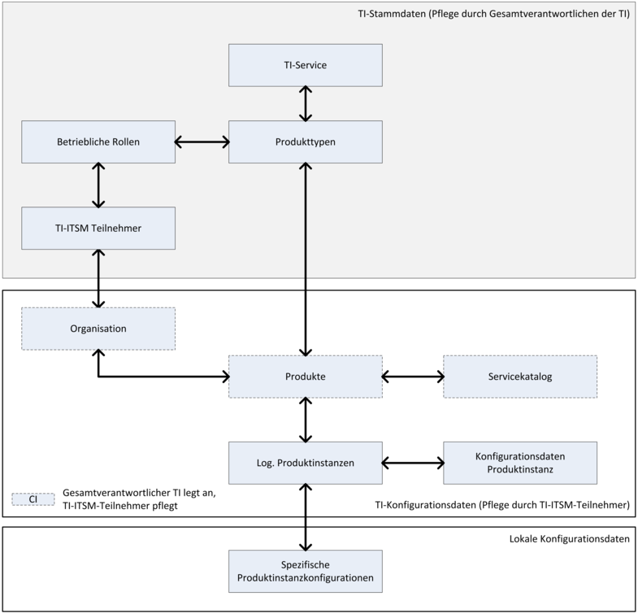

Elektronische Gesundheitskarte und Telematikinfrastruktur
Übergreifende Richtlinien zum Betrieb der TI
| Version | 2.7.0 |
| Revision | 571704 |
| Stand | 03.02.2023 |
| Status | freigegeben |
| Klassifizierung | öffentlich |
| Referenzierung | gemRL_Betr_TI |
Änderungen zur Vorversion
Anpassungen des vorliegenden Dokumentes im Vergleich zur Vorversion können Sie der nachfolgenden Tabelle entnehmen.
Dokumentenhistorie
| Version |
Stand |
Kap./ Seite |
Grund der Änderung, besondere Hinweise |
Bearbeiter |
|---|---|---|---|---|
| Vollständige Überarbeitung gemäß C_6410 und C_6411 | ||||
| 2.0.0 | 14.05.18 | freigegeben | gematik | |
| 2.0.1 | 24.08.18 | Korrektur der Übertragung der bekannten Änderung (redaktionell) | gematik | |
| 2.1.0 | 15.05.19 | Einarbeitung Änderungsliste P18.1 | gematik | |
| 2.2.0 | 28.06.19 | Einarbeitung Änderungsliste P19.1 | gematik | |
| 2.3.0 | 02.10.20 | Einarbeitung Änderungsliste P20.1/2 | gematik | |
| 2.4.0 | 02.03.20 | Einarbeitung Änderungsliste P20.1 | gematik | |
| 2.5.0 | 30.06.20 | Anpassungen gemäß Änderungsliste P22.1 und Scope-Themen aus Systemdesign R4.0.0 | gematik | |
| 2.5.1 | 19.02.20 | Einarbeitung Änderungsliste P22.5 | gematik | |
| 2.6.0 | 14.02.22 | Einarbeitung Änderungsliste Betr_Maintenance_21.3 | gematik | |
| 2.7.0 | 03.02.23 | Einarbeitung Änderungsliste Betr_Maintenance_22.3 | gematik |
Die vorliegenden „Übergreifenden Richtlinien zum Betrieb der TI“ definieren die betrieblichen Mitwirkungspflichten und Schnittstellen zur übergreifenden Zusammenarbeit der Teilnehmer der Telematikinfrastruktur (TI) im IT-Servicemanagement (TI-ITSM) auf prozessualer Ebene. Die übergreifenden Richtlinien gelten für den Betrieb aller Betriebsumgebungen (Referenzumgebung (RU), Testumgebung (TU), Produktivumgebung (PU)). TI-ITSM-Teilnehmer sind Anbieter. Die zur Erbringung der TI-Services benötigten Produkte müssen zugelassen sein.
Eine abschließende Übersicht der TI-ITSM-Teilnehmer findet sich im Betriebskonzept [gemKPT_Betr#Tab_KPT_Betr_TI_001 TI-ITSM-Teilnehmer].
Hinweis
Anforderungen, die im vorliegenden Dokument definiert sind und sich an eine Teilmenge der TI-ITSM-Teilnehmer richten, bspw. an die Anbieter zentraler Produkte, sind deutlich an diese adressiert.
Die Mitwirkung der gematik am TI-ITSM erfolgt über die Rolle „Gesamtverantwortlicher TI“.
In dieser Rolle hat die gematik Ergebnisverantwortung für die TI-ITSM-Betriebsprozesse und nimmt dort folgende Funktionen ein:
Die Richtlinien treffen keine Vorgaben zu internen ITSM-Prozessen der einzelnen Teilnehmer der TI.
Folgende Prozesse werden im TI-ITSM betrachtet:
Die Aufgabenbereiche sind an die IT Infrastructure Library V3 (ITIL® V3) angelehnt. Alle Aufgabenfelder werden in Form von übergreifenden IT-Service-Management-Prozessen mit den jeweiligen Aufgaben und Zielen vorgestellt. Sie orientieren sich an den ITIL-Lebenszyklusphasen des „Service Design“ zur Erstellung, Weiterentwicklung und Pflege von Vorgaben, der „Service Transition“ zur Überführung der Vorgaben in den Wirkbetrieb und der „Service Operation“ in der Unterstützung des Wirkbetriebs der TI-Services.
Das Dokument richtet sich an die bezeichneten TI-ITSM-Teilnehmer.
Dieses Dokument enthält normative Festlegungen zur Telematikinfrastruktur (TI) des Deutschen Gesundheitswesens. Der Gültigkeitszeitraum der vorliegenden Version und deren Anwendung in Zulassungsverfahren wird durch die gematik GmbH in gesonderten Dokumenten (z. B. Dokumentenlandkarte, Anbietertypsteckbrief, Produkttypsteckbrief, Leistungsbeschreibung) festgelegt und bekannt gegeben.
Schutzrechts-/Patentrechtshinweis
Die nachfolgende Richtlinie ist von der gematik allein unter technischen Gesichtspunkten erstellt worden. Im Einzelfall kann nicht ausgeschlossen werden, dass die Implementierung der Richtlinie in technische Schutzrechte Dritter eingreift. Es ist allein Sache des Anbieters oder Herstellers, durch geeignete Maßnahmen dafür Sorge zu tragen, dass von ihm aufgrund der Richtlinie angebotene Produkte und/oder Leistungen nicht gegen Schutzrechte Dritter verstoßen und sich ggf. die erforderlichen Erlaubnisse/Lizenzen von den betroffenen Schutzrechtsinhabern einzuholen. Die gematik GmbH übernimmt insofern keinerlei Gewährleistungen.
Nicht alle ITSM-Prozesse gemäß ITIL® V3 sind im Rahmen dieses Richtliniendokumentes geregelt. Dies ergibt sich insbesondere
Aus oben genannten Gründen sind innerhalb dieses Dokumentes folgende ITSM-Prozesse nicht geregelt:
Regelungen für Anwender, Versicherte und DVOs (Dienstleister vor Ort) werden nicht definiert.
Anforderungen als Ausdruck normativer Festlegungen werden durch eine eindeutige ID in eckigen Klammern sowie die dem Request for Change (RFC) 2119 [RFC2119] entsprechenden, in Großbuchstaben geschriebenen deutschen Schlüsselworte MUSS, DARF NICHT, SOLL, SOLL NICHT, KANN gekennzeichnet. Sie werden im Dokument wie folgt dargestellt:
<AFO-ID> - <Titel der Afo>
Text / Beschreibung
[<=]
Dabei umfasst die Anforderung sämtliche innerhalb der Afo-ID und der Textmarke angeführten Inhalte.
Das ITSM der TI verantwortet die übergreifende Bearbeitung von Vorgängen in der TI.
Wesentliche Aufgaben sind:
Es werden keine normativen Vorgaben zu lokalen Prozessen der TI-ITSM-Teilnehmer gemacht.
Übergreifender Vorgang
Vorgänge sind Auslöser für die in diesen Richtlinien beschriebenen TI-ITSM-Prozesse.
Ein übergreifender Vorgang liegt vor, wenn
Alle Informationen, die bei der Bearbeitung eines Vorgangs entstehen, sind Vorgangsdaten.
Die Kommunikationsschnittstellen und die Ansprechpartner bilden den SPOC (Single Point of Contact) des jeweiligen TI-ITSM-Teilnehmers im Rahmen der Prozesskommunikation. Diese Schnittstellen sollen die Erreichbarkeit der TI-ITSM-Teilnehmer untereinander sicherstellen.
Voraussetzung zur Teilnahme am ITSM der TI ist die Nutzung des zentralen TI-ITSM-Systems.
GS-A_4090
Alle TI-ITSM-Teilnehmer MÜSSEN sowohl schriftlich als auch mündlich in deutscher Sprache kommunizieren. Dies gilt insbesondere für die gemäß GS-A_4085 festgelegten Kommunikationsschnittstellen und für alle Dokumentationen.
<=
GS-A_3886-01
Alle TI-ITSM-Teilnehmer MÜSSEN alle übergreifenden Vorgänge, zwecks Informationsübermittlung, im TI-ITSM-System erfassen.
<=
Das TI-ITSM-System vergibt für jeden Vorgang automatisch eine eindeutige Referenznummer. Die Referenznummer des lokalen ITSM-Systems des TI-ITSM-Teilnehmers kann mitgeführt werden.
GS-A_4085
Alle TI-ITSM-Teilnehmer MÜSSEN im Rahmen der übergreifenden Betriebsprozesse mindestens die nachfolgenden Kommunikationsschnittstellen etablieren:
GS-A_4086
Alle TI-ITSM-Teilnehmer MÜSSEN die Kommunikationsschnittstellen während der festgelegten Servicezeiten erreichbar halten und einer regelmäßigen Eingangsprüfung und Bearbeitung unterziehen.
<=
GS-A_4088-01
TI-ITSM-Teilnehmer MÜSSEN Kontaktdaten von Ansprechpartnern im TI-ITSM-System eintragen und aktuell halten für
Im TI-ITSM-System können zur Gewährleistung der besseren Erreichbarkeit der jeweiligen Ansprechpartner(gruppen) der TI-ITSM-Teilnehmer auch Funktionspostfächer hinterlegt werden.
Mehrfachnennungen und/oder Nennung eines Ansprechpartners/Funktionspostfachs für mehrere Bereiche sind möglich.
Bei Ausfall des TI-ITSM-Systems müssen die TI-ITSM-Teilnehmer die Bearbeitung der Vorgänge fortsetzen. Die Kommunikation erfolgt dann über die gemäß GS-A_4088-01 angegebenen Kommunikationsschnittstellen.
GS-A_5402
Bei Ausfall des TI-ITSM-Systems oder anderer Kommunikationsschnittstellen MUSS die Kommunikation durch die TI-ITSM-Teilnehmer eigenverantwortlich untereinander sichergestellt werden. Vorgänge müssen im TI-ITSM-System nachdokumentiert werden.
<=
GS-A_5401
Der Informationsaustausch per E-Mail zwischen allen TI-ITSM-Teilnehmern MUSS verschlüsselt mittels Secure/Multipurpose Internet Mail Extensions (S/MIME) erfolgen. Das für diese Kommunikation notwendige Zertifikat MUSS vom Eigentümer der E-Mail-Adressen selbst beschafft und allen TI-ITSM-Teilnehmern zur Verfügung gestellt werden.
<=
Die Zurverfügungstellung der E-Mail-Zertifikate erfolgt durch alle TI-ITSM-Teilnehmer in der Wissensdatenbank der TI.
Der TI-ITSM-Teilnehmer sollte alle anderen TI-ITSM-Teilnehmer durch den Versand einer mit seinem Zertifikat signierten E-Mail über dieses Zertifikat informieren. Wird ein bestehendes Zertifikat ersetzt, sollte diese Information mindestens zwei Wochen vor dem Ablauf der Gültigkeit des alten Zertifikates erfolgen.
Informationen zu übergreifenden Vorgängen, wie Vorgangsdaten, Lösungsdokumentation etc., sind im zentralen TI-ITSM-System vorhanden. Der Gesamtverantwortliche TI wird die im System vorhandenen Daten zum übergreifenden TI-Reporting verwenden.
Der Gesamtverantwortliche TI wird einmal im Monat die vom TI-ITSM-System zur Verfügung gestellten und aus den übermittelten Daten das TI-Reporting aufbereiten.
Der Gesamtverantwortliche TI kann ad hoc, also außerplanmäßig, Reports anfordern. Dabei kann es erforderlich werden, andere Kennzahlen (innerhalb eines zumutbaren Umfangs für den TI-ITSM-Teilnehmer) abzufragen. Entsteht solch eine Notwendigkeit zur Erhebung weiterer Messgrößen, werden diese gemeinsam mit den betroffenen TI-ITSM-Teilnehmern individuell abgestimmt.
GS-A_4095
TI-ITSM-Teilnehmer MÜSSEN den vom Gesamtverantwortlichen TI angeforderten Ad-hoc-Report über die benannte Kommunikationsschnittstelle (entsprechend GS-A_4085) im geforderten Format (entsprechend GS-A_5248, GS-A_5249, GS-A_5608) und Zeitfenster übermitteln.
<=
Die Prozessschnittstellen der TI-ITSM-Teilnehmer müssen für die übergreifende Kommunikation mit dem TI-ITSM-System prozessseitig und technisch kompatibel sein. Der Nachweis der Etablierung geeigneter TI-ITSM-Schnittstellenprozesse muss auszugsweise durch Vorlage eines Betriebshandbuches erfolgen.
GS-A_5343
Die Auszüge aus dem Betriebshandbuch des TI-ITSM-Teilnehmers MÜSSEN nachfolgende Themen beinhalten:
Es besteht die Möglichkeit, anlassbezogene Audits durchzuführen. Audits werden durchgeführt, wenn die Prozesskommunikation zwischen den am Betrieb beteiligten TI-ITSM-Teilnehmern nachhaltig gestört bzw. die Serviceerbringung gegenüber dem Anwender bzw. Versicherten gefährdet ist.
Die Audits dienen der Prüfung der korrekten Umsetzung der Richtlinien insbesondere mit dem Ziel, Schnittstellen- und Prozessprobleme zwischen TI-ITSM-Teilnehmern zu identifizieren. Die Erkenntnisse der anlassbezogenen Audits können auch zur Optimierung der Richtlinien führen, um die Reibungsverluste im Zusammenspiel der TI-ITSM-Teilnehmer untereinander zu minimieren.
GS-A_4855-02
TI-ITSM-Teilnehmer MÜSSEN Auditierungen durch Gesamtverantwortlichen TI zur Überprüfung der Einhaltung von Betriebs- und Produktvorgaben ermöglichen und angemessen unterstützen.
Sofern ein TI-ITSM-Teilnehmer bereits gesetzlichen Vorgaben einer Auditierung unterliegt, ihm also eine Prüfung durch eine in der gesetzlichen Vorgabe benannte Instanz vorgeschrieben ist, unterliegt er nicht der Auditierung gemäß dieser Anforderung. Der TI-ITSM-Teilnehmer MUSS die gesetzliche Vorgabe gegenüber dem Gesamtverantwortlichen TI benennen. Fachdienste VSDM, KTR-AdV und KTR-Consumer sind von dieser Anforderung ausgeschlossen.
<=
Umfang und Zeitpunkt des Audits stimmt der Gesamtverantwortliche TI mit dem zuständigen Serviceverantwortlichen ab.
GS-A_3917
TI-ITSM-Teilnehmer MÜSSEN bei der Durchführung von Audits auf Verlangen alle relevanten Informationen (z.B. TI-ITSM relevante Tickets im ITSM-System) im Rahmen der Umsetzung bzw. Erfüllung der betrieblichen Anforderungen bereitstellen. <=
Die Koordination der Vorgangsbearbeitung erfolgt i.d.R. durch die betroffenen TI-ITSM-Teilnehmer in Eigenverantwortung.
Ausschließlich bei Eskalationen eines Vorgangs oder Vorgängen mit TI-übergreifender Auswirkung kann der Gesamtverantwortliche TI – zur Gewährleistung der Performance, Sicherheit und Stabilität der zentralen und dezentralen Produkte – eine zentrale Koordinierung der Aktivitäten der anderen Beteiligten übernehmen.
Eine Eskalation wird angestoßen, um eine gefährdete Zielerreichung dennoch sicherzustellen. In den „Übergreifenden Richtlinien zum Betrieb der TI“ wird unter dem Begriff „Eskalation“ prinzipiell eine hierarchische Eskalation verstanden. Funktionale Eskalationen sind im Umfang der definierten ITSM-Prozesse Zuweisungen bzw. Weiterleitungen von speziellen Aufgaben an andere Prozessbeteiligte.
GS-A_3920
TI-ITSM-Teilnehmer MÜSSEN bei übergreifenden Vorgängen eine hierarchische Eskalation an den Gesamtverantwortlichen TI einleiten, wenn einer der nachfolgenden Aspekte zutrifft:
Der Gesamtverantwortliche TI kann bei Vorgängen der Priorität 1 „kritisch“ und 2 „hoch“ mit (produkt-)übergreifender Auswirkung eine Taskforce zur Behebung des Vorgangs bilden. Diese wird aus mehreren der am Betriebsprozess beteiligten TI-ITSM-Teilnehmern zusammengesetzt.
GS-A_3922
TI-ITSM-Teilnehmer MÜSSEN bei Aufforderung durch den Gesamtverantwortlichen TI an einer Taskforce zur Behebung von übergreifenden Vorgängen mit der Priorität 1 oder 2 teilnehmen, der Taskforce gemäß der zeitlichen Vorgabe der Aufforderung beitreten, die Lösungsfindung und die Erstellung des Abschlussberichtes unterstützen.
<=
Das Incident Management verantwortet die schnellstmögliche Beseitigung von Störungen in der TI bzw. die Schaffung eines Workarounds (Umgehungslösung) für eine aufgetretene Störung in allen Betriebsumgebungen. Die Suche nach der Ursache von wiederkehrenden Störungen (die sogenannte Root-Cause-Analyse) wird in diesem Fall im Prozess Problem Management erfolgen.
Wesentliche Aufgabe des Incident Managements ist die:
Es werden keine normativen Vorgaben zum lokalen Incident Management der TI-ITSM-Teilnehmer gemacht.
Ein übergreifender Incident liegt vor, wenn
Zur Bearbeitung des übergreifenden Incidents muss sichergestellt sein, dass an den Schnittstellen zwischen den Prozessbeteiligten eine konsistente Kommunikation, auf Grundlage der Dokumentation des übergreifenden Incidents erfolgt.
Incidents, auf die diese Definition nicht zutrifft, sind lokale Incidents und werden im Rahmen des lokalen Incident-Prozesses des TI-ITSM-Teilnehmers verarbeitet.
Erlangt ein TI-ITSM-Teilnehmer Kenntnis über eine Servicestörung bzw. einen vom erwarteten Betriebsverhalten abweichenden Service muss er auf Basis der GS-A_3876 eine Vorprüfung vornehmen.
GS-A_3876
TI-ITSM-Teilnehmer MÜSSEN jeden gemeldeten Incident dahingehend prüfen, ob es sich um einen übergreifenden Incident handelt, für den zur Incident-Lösung die serviceverantwortlichen und/oder lösungsunterstützenden TI-ITSM-Teilnehmer und/oder der Gesamtverantwortliche TI herangezogen werden sollen. <=
Sofern die Prüfung ergibt, dass ein übergreifender Incident vorliegt muss dieser gemäß GS-A_3886-* im TI-ITSM-System erfasst werden. Pflichtangaben für die Ersterfassung werden vom TI-ITSM-System vorgegeben.
GS-A_5449
TI-ITSM-Teilnehmer MÜSSEN einen Vorgang als „sicherheitsrelevant“ markieren, wenn die Vertraulichkeit bzw. Integrität eines schutzbedürftigen Informationsobjektes gefährdet ist.
<=
GS-A_5450
TI-ITSM-Teilnehmer MÜSSEN eine Störung als „datenschutzrelevant“ markieren, wenn personenbezogene Daten gemäß Art. 4 Nr. 1 DSGVO betroffen sind.
<=
GS-A_4125
TI-ITSM-Teilnehmer MÜSSEN potenzielle TI-Notfälle im operativen Betrieb im Rahmen des Incident Managements feststellen. Potenzielle TI-Notfälle werden als Incidents der Priorität 1 mit Kennzeichnung „TI-Notfall“ klassifiziert.
<=
Gemeldete TI-Notfälle werden zuerst als potenziell aufgenommen, und es gilt Kapitel 12.3.5.1 und 12.3.5.2.
GS-A_3884
TI-ITSM-Teilnehmer MÜSSEN zur Ermittlung der Priorität eines übergreifenden Incidents die beiden Faktoren „Dringlichkeit“ und „Auswirkung“ festlegen.
Tabelle 1: Tab_Betr_TIP_026 INC – Festlegung der Dringlichkeit
| Dringlichkeit |
Beschreibung |
| Hoch |
|
| Mittel |
|
| Niedrig |
|
Tabelle 2: Tab_Betr_TIP_027 INC – Festlegung von Auswirkung
| Auswirkung |
Beschreibung |
| Hoch |
|
| Mittel |
|
| Niedrig |
|
Die unter „Beschreibung“ genannten Punkte sind durch ein logisches ODER verknüpft und sollen als nicht abschließende Beispiele zur Einschätzung dienen.
Die Ermittlung der Priorität erfolgt durch das TI-ITSM-System nach der Vorschrift in der Tab_Betr_TIP_009: Prioritätenmatrix.
Tabelle 3: Tab_Betr_TIP_009 INC – Prioritätenmatrix
| Dringlichkeit |
Auswirkung
|
|||
|---|---|---|---|---|
| Hoch |
Mittel |
Niedrig |
||
| Hoch |
1 |
2 |
3 |
|
| Mittel |
2 |
3 |
4 |
|
| Niedrig |
3 |
4 |
4 |
|
Der Melder ermittelt über das betroffene bzw. vermutete verursachende Produkt den Serviceverantwortlichen. Dabei wird er vom TI-ITSM-System durch eine kontextsensitive Vorschlagsliste unterstützt. Durch Auswahl des entsprechenden TI-ITSM-Teilnehmers wird die Weiterleitung des Incidents ermöglicht und die übergreifende Bearbeitung initiiert.
Zur Identifikation des richtigen serviceverantwortlichen TI-ITSM-Teilnehmers werden innerhalb des Betriebskonzepts [gemKPT_Betr] die Leistungs- und Supportmodelle definiert. Zudem werden in der zentralen Wissensdatenbank des TI-ITSM-Systems Kontaktinformationen von TI-ITSM-Teilnehmern bereitgestellt.
Der Empfänger des übergreifenden Incidents muss bei Erhalt der Meldung seine (vermutete) Verantwortung verifizieren:
GS-A_3902
TI-ITSM-Teilnehmer MÜSSEN jeden an sie gerichteten übergreifenden Incident dahingehend prüfen, ob der Incident in der eigenen Serviceverantwortung liegt.
<=
GS-A_3904
TI-ITSM-Teilnehmer MÜSSEN einen übergreifenden Incident annehmen, wenn sie die Serviceverantwortung haben.
<=
GS-A_3905
TI-ITSM-Teilnehmer MÜSSEN die Ablehnung eines übergreifenden Incidents mit einer qualifizierten Rückmeldung an den meldenden TI-ITSM-Teilnehmer versehen, aus der nachvollziehbar zu entnehmen ist, warum keine Bearbeitung erfolgen kann.
<=
Der serviceverantwortliche TI-ITSM-Teilnehmer beginnt unverzüglich mit der Bearbeitung der Störung. Er wird im TI-ITSM-System die Lösung und die dafür notwendigen Aktivitäten nachvollziehbar dokumentieren. Dadurch können die Erkenntnisse für Diagnosen und Lösungen im Rahmen des Problem Managements genutzt werden.
GS-A_3907
Der serviceverantwortliche TI-ITSM-Teilnehmer MUSS nach erfolgter Erstellung bzw. Annahme eines übergreifenden Incidents unverzüglich mit der Incident-Bearbeitung beginnen und – innerhalb der vereinbarten Lösungszeiten – eine Lösung für den Incident herbeiführen und diesen beheben.
<=
A_18403
Lösungsverantwortliche TI-ITSM-Teilnehmer MÜSSEN spätestens mit der Lösung einer Incidents der Priorität 1 mit einer Root Cause Analysis beginnen, dafür das vom Gesamtverantwortlichen der TI bereitgestellte Formular nutzen und anschließend ausgefüllt an ihn übermitteln. <=
Das Formular wird in der Wissensdatenbank zur Verfügung gestellt.
A_18404
Lösungsverantwortliche MÜSSEN bei Incidents der Priorität 2, 3 oder 4 auf Anfrage des Gesamtverantwortlichen der TI mit einer Root Cause Analysis beginnen, dafür das von ihm bereitgestellte Formular nutzen und anschließend ausgefüllt an ihn übermitteln. <=
A_18405
Am Incident beteiligte TI-ITSM-Teilnehmer MÜSSEN auf Anfrage des Gesamtverantwortlichen der TI mit der Erstellung einer Root Cause Analysis beginnen, dafür das vom Gesamtverantwortlichen der TI bereitgestellte Formular nutzen und anschließend ausgefüllt an ihn übermitteln. <=
A_18406
Lösungsverantwortliche TI-ITSM-Teilnehmer MÜSSEN auf Rückfrage des Gesamtverantwortlichen der TI Informationen zur Root Cause Analysis nachreichen. <=
Während der Lösungsfindung für einen übergreifenden Incident kann der serviceverantwortliche TI-ITSM-Teilnehmer andere TI-ITSM-Teilnehmern um Unterstützung bitten.
Der serviceverantwortliche TI-ITSM-Teilnehmer wechselt durch die Anfrage zur Lösungsunterstützung nicht. Der Empfänger dieser Anfrage wird den übermittelten Vorgang hinsichtlich seiner zu leistenden Lösungsunterstützung prüfen.
GS-A_5587
TI-ITSM-Teilnehmer, die die Lösungsunterstützung eines übergreifenden Incidents ablehnen, MÜSSEN dies mit einer qualifizierten Rückmeldung an den anfragenden TI-ITSM-Teilnehmer durchführen, aus der nachvollziehbar zu entnehmen ist, warum keine Lösungsunterstützung möglich ist.
<=
Nachdem der serviceverantwortliche TI-ITSM-Teilnehmer den übergreifenden Incident gelöst hat, wird der meldende TI-ITSM-Teilnehmer über das TI-ITSM-System informiert und zur Prüfung aufgefordert, sofern er den Incident nicht gegen sich selbst gestellt hat.
GS-A_5400
Der meldende TI-ITSM-Teilnehmer MUSS die ihm vorgelegte Lösung des übergreifenden Incidents prüfen und sein Ergebnis dem serviceverantwortlichen TI-ITSM-Teilnehmer innerhalb der Verifikationsfrist (entsprechend [gemKPT_Betr#TIP1-A_7265-03]) über das TI-ITSM-System mitteilen.
<=
GS-A_5250
Wird die Lösung eines Incidents durch den meldenden TI-ITSM-Teilnehmer abgelehnt MUSS der serviceverantwortliche TI-ITSM-Teilnehmer den übergreifenden Incident erneut bearbeiten, die Messung der Lösungszeit wird dann fortgesetzt.
<=
Nach erfolgreicher Verifikation erfolgt die vollständige Schließung des Incidents durch den serviceverantwortlichen TI-ITSM-Teilnehmer.
GS-A_3888
TI-ITSM-Teilnehmer MÜSSEN vor der Schließung einer übergreifenden Incident-Dokumentation sicherstellen, dass der Incident behoben ist.
Ist der Incident nicht behoben, dann ist der bestehende Incident weiterzubearbeiten. Es beginnt keine erneute Lösungszeit.
Liegt nach Ablauf der Verifikationsfrist (entsprechend [gemKPT_Betr#TIP1-A_7265-03]) keine Rückmeldung durch den meldenden TI-ITSM-Teilnehmer vor, KANN der übergreifende Incident geschlossen werden.
<=
GS-A_3889
Serviceverantwortliche TI-ITSM-Teilnehmer MÜSSEN nach verifizierter Behebung der Störung die Dokumentation eines übergreifenden Incidents abschließend bearbeiten und diesen Incident schließen.
<=
Die Koordination der Vorgangsbearbeitung erfolgt i.d.R. durch die betroffenen TI-ITSM-Teilnehmer in Eigenverantwortung. Kommt es zu Hindernissen im Prozessablauf, steht den TI-ITSM-Teilnehmern das Instrument der Eskalation an den Gesamtverantwortlichen TI nach den Vorgaben der GS-A_3920 zur Verfügung.
TI-ITSM-Teilnehmer können durch den Gesamtverantwortlichen TI zur Mitwirkung in einer Taskforce gemäß GS-A_3922 aufgerufen werden. Diese Taskforce ist ein Instrument zur Lösung von kritischen Incidents der Priorität 1 oder 2.
Die prozessübergreifende Regelung zur Eskalation und Mitwirkung in einer Taskforce erfolgt in Kapitel 2.4 Zentrale Koordinierung durch den Gesamtverantwortlichen TI.
Security Incidents werden wie alle anderen Incidents behandelt. Es erfolgt ggf. eine reduzierte bzw. eingeschränkte Kommunikation. Die Entscheidung darüber führt der Gesamtverantwortliche TI unter Einbeziehung beratender Fachexperten herbei.
Incidents mit Datenschutzrelevanz werden wie alle anderen Incidents behandelt. Es erfolgt ggf. eine reduzierte bzw. eingeschränkte Kommunikation. Die Entscheidung darüber führt der Gesamtverantwortliche TI unter Einbeziehung beratender Fachexperten herbei.
Wird ein Incident als Notfall qualifiziert, greift das in diesen Richtlinien beschriebene Verfahren zur Bewältigung von TI-Notfällen.
Die Dokumentation des vom Gesamtverantwortlichen TI festgestellten Notfalls erfolgt im Notfallmanagement. Ein entsprechender Verweis erfolgt im zugehörigen Incident-Ticket.
Der Problem Management Prozess verantwortet die nachhaltige Stabilisierung aller TI-Betriebsumgebungen, der RU, TU und PU. Die Ursachen wiederkehrender Störungen werden vom Problem Management analysiert, bewertet und – falls technisch und wirtschaftlich machbar – durch neue stabile Lösungen beseitigt.
Im Gegensatz zum wirkungsorientierten Incident Management, bei dem es um schnellstmögliche Wiederherstellung beeinträchtigter TI-Services geht, arbeitet das Problem Management ursachenorientiert, d.h. der Prozess zielt auf eine definitive, nachhaltige Beseitigung von Störungsursachen.
Um zwischen den verschiedenen TI-ITSM-Teilnehmern sicherzustellen, dass
ist durch TI-ITSM-Teilnehmer ein übergreifendes Problem Management zu etablieren.
Ein übergreifendes Problem liegt vor, wenn
Zur Bearbeitung des übergreifenden Problems muss sichergestellt sein, dass an den Schnittstellen zwischen den Prozessbeteiligten eine konsistente Kommunikation, auf Grundlage der Dokumentation des übergreifenden Problems erfolgt.
Problems, auf die diese Definition nicht zutrifft, sind lokale Problems und werden im Rahmen des lokalen Problem-Prozesses des TI-ITSM-Teilnehmers verarbeitet.
GS-A_3958
TI-ITSM-Teilnehmer MÜSSEN geeignete Maßnahmen implementieren, um proaktiv und reaktiv eine Problemerkennung zu ermöglichen.
<=
GS-A_3959
TI-ITSM-Teilnehmer MÜSSEN jedes erkannte Problem dahingehend prüfen, ob es sich um ein übergreifendes Problem handelt, für das zur Problem-Lösung die serviceverantwortlichen und/oder lösungsunterstützenden TI-ITSM-Teilnehmer sowie der Gesamtverantwortliche TI herangezogen werden sollen.
<=
Sofern die Prüfung ergibt, dass ein übergreifendes Problem vorliegt muss dieses gemäß GS-A_3886-* im TI-ITSM-System erfasst werden. Pflichtangaben für die Ersterfassung werden vom TI-ITSM-System vorgegeben.
GS-A_3964
TI-ITSM-Teilnehmer MÜSSEN zur Ermittlung der Priorität eines übergreifenden Problems die beiden Faktoren „Dringlichkeit“ und „Auswirkung“ festlegen.
Tabelle 4: Tab_Betr_TIP_102 PRO – Festlegung von Dringlichkeit
| Dringlichkeit | Beschreibung |
|---|---|
| Hoch | Das Problem muss schnellstmöglich gelöst werden, eine maximale negative Auswirkung liegt vor; ein Workaround ist nicht oder nur nach viel Aufwand vorhanden |
| Mittel | Das Problem sollte so schnell wie möglich gelöst werden; eine Ausweitung ist absehbar |
| Niedrig | Das Problem besteht, ist aber durch geeignete Maßnahmen unter Kontrolle. Es sollte in absehbarer Zeit gelöst werden. |
Tabelle 5: Tab_Betr_TIP_103 PRO – Festlegung von Auswirkung
| Auswirkung | Beschreibung |
|---|---|
| Hoch |
|
| Mittel |
|
| Niedrig |
|
Die unter „Beschreibung“ genannten Punkte sind durch ein logisches ODER verknüpft und sollen als nicht abschließende Beispiele zur Einschätzung dienen.
Der problemerkennende TI-ITSM-Teilnehmer ermittelt für das betroffene und verursachende Produkt den Serviceverantwortlichen. Dies wird durch das TI-ITSM-System unterstützt. Durch Auswahl des vermutlich verursachenden Serviceverantwortlichen wird die Weiterleitung des Problems ermöglicht und die übergreifende Bearbeitung initiiert.
Ein Problem kann auch dem Gesamtverantwortlichen TI zugewiesen werden, wenn die Ursache des Problems in einer unvollständigen bzw. ungenauen Spezifikation begründet wird.
Zur Identifikation des richtigen serviceverantwortlichen TI-ITSM-Teilnehmers werden innerhalb des Betriebskonzepts die Leistungs- und Supportmodelle definiert. Zudem werden im TI-ITSM-System Kontaktinformationen von TI-ITSM-Teilnehmern bereitgestellt.
Der Empfänger des übergreifenden Problems muss bei Erhalt der Meldung seine (vermutete) Verantwortung verifizieren.
GS-A_3975
TI-ITSM-Teilnehmer MÜSSEN jedes an sie gerichtete übergreifende Problem dahingehend prüfen, ob das Problem in der eigenen Serviceverantwortung liegt. <=
GS-A_3981
TI-ITSM-Teilnehmer MÜSSEN das übergreifende Problem annehmen, wenn sie die Serviceverantwortung haben.
<=
GS-A_3982
TI-ITSM-Teilnehmer MÜSSEN das abgelehnte übergreifende Problem mit einer qualifizierten Rückmeldung an den meldenden TI-ITSM-Teilnehmer versehen, aus der nachvollziehbar zu entnehmen ist, warum keine Bearbeitung erfolgen kann.
<=
Der serviceverantwortliche TI-ITSM-Teilnehmer beginnt unverzüglich mit der Ursachenanalyse des Problems. Er wird im TI-ITSM-System die Ursache nachvollziehbar dokumentieren.
GS-A_3983
Der serviceverantwortliche TI-ITSM-Teilnehmer MUSS nach erfolgter Erstellung bzw. Annahme eines übergreifenden Problems unverzüglich mit der Problem-Bearbeitung beginnen und – innerhalb der vereinbarten Lösungszeiten – eine Lösung für das Problem herbeiführen und dieses beheben.
<=
Benötigen serviceverantwortliche TI-ITSM-Teilnehmer eine TI-Testumgebung, muss dies vorab angefragt werden. Dazu stellen sie einen Service Request im TI-ITSM-System.
GS-A_3984
TI-ITSM-Teilnehmer MÜSSEN für die Nutzung (d.h. zur Anbindung) der TI-Testumgebung (RU/TU) einen Service Request im TI-ITSM-System stellen.
<=
Die Lösungsentwicklung erfolgt durch den serviceverantwortlichen TI-ITSM-Teilnehmer. Dabei kann er von anderen am Prozess beteiligten TI-ITSM-Teilnehmern sowie vom Gesamtverantwortlichen TI unterstützt werden.
GS-A_3986
Der serviceverantwortliche TI-ITSM-Teilnehmer MUSS die Koordination zwischen allen erforderlichen Lösungs- bzw. Unterstützungsbeteiligten im Rahmen der Problemlösungsentwicklung übernehmen.
<=
Wird für die Lösung eines Problems eine Änderung an der TI benötigt, ist diese Änderung über den Change & Release Management-Prozess anzustoßen.
GS-A_3987
Der serviceverantwortliche TI-ITSM-Teilnehmer MUSS während der Problemlösungsentwicklung einen Change Request über das TI-ITSM-System mit Verweis auf das zugrundeliegende Problem initiieren, in dem die Durchführung von Autorisierung, Entwicklung, Test und Implementierung der Lösung dokumentiert wird.
<=
GS-A_5377
Der serviceverantwortliche TI-ITSM-Teilnehmer KANN ein Problem stornieren, falls einer der folgenden Aspekte zutrifft:
GS-A_5588
Der serviceverantwortliche TI-ITSM-Teilnehmer KANN die Problembearbeitung mit Zustimmung des Gesamtverantwortlichen TI abbrechen, falls die Auswirkungen des Problems und der Aufwand zu deren Behebung in keinem wirtschaftlichen oder sicherheitsrelevanten Verhältnis zueinander stehen.
<=
Der Gesamtverantwortliche TI wird die Stornierung oder den Abbruch eines Problems prüfen und alle Beteiligten informieren. Bei Ablehnung muss das Problem vom serviceverantwortlichen TI-ITSM-Teilnehmer wieder in die Lösungsbearbeitung übernommen werden.
Während der Erarbeitung einer Lösung für ein übergreifendes Problem kann der serviceverantwortliche TI-ITSM-Teilnehmer auf die Mitwirkung von anderen TI-ITSM-Teilnehmern angewiesen sein.
Die Unterstützungsleistung wird über das TI-ITSM-System angefordert. Die Lösungsverantwortung verbleibt beim serviceverantwortlichen TI-ITSM-Teilnehmer.
GS-A_5589
TI-ITSM-Teilnehmer MÜSSEN jede an sie gerichtete Anfrage zur Lösungsunterstützung eines übergreifenden Problems dahingehend prüfen, ob sie zur Lösungsunterstützung gemäß Betriebskonzept verpflichtet sind.
<=
GS-A_3977
TI-ITSM-Teilnehmer MÜSSEN die Anfrage zur Lösungsunterstützung eines übergreifenden Problems annehmen, wenn sie die gemäß TIP1-A_7266 [gemKPT_Betr] für die Servicekomponenten mitverantwortlich sind.
<=
GS-A_3976
TI-ITSM-Teilnehmer MÜSSEN die Ablehnung der Lösungsunterstützung des übergreifenden Problems mit einer qualifizierten Rückmeldung an den serviceverantwortlichen TI-ITSM-Teilnehmer versehen, aus der nachvollziehbar zu entnehmen ist, warum keine Lösungsunterstützung erfolgen kann.
<=
Nachdem der serviceverantwortliche TI-ITSM-Teilnehmer das übergreifende Problem gelöst hat, wird der problemerkennende TI-ITSM-Teilnehmer über das TI-ITSM-System informiert und zur Prüfung aufgefordert, sofern er das Problem nicht gegen sich selbst gestellt hat.
GS-A_3988
Der meldende TI-ITSM-Teilnehmer MUSS die ihm vorgelegte Lösung des übergreifenden Problems prüfen und sein Ergebnis dem serviceverantwortlichen TI-ITSM-Teilnehmer innerhalb der Verifikationsfrist (entsprechend [gemKPT_Betr#TIP1-A_7265-03]) über das TI-ITSM-System mitteilen.
<=
GS-A_3989
Wird die Lösung eines übergreifenden Problems durch den meldenden TI-ITSM-Teilnehmer abgelehnt, MUSS der serviceverantwortliche TI-ITSM-Teilnehmer das übergreifende Problem erneut bearbeiten, die Messung der Lösungszeit wird dann fortgesetzt.
<=
GS-A_3971
Serviceverantwortliche TI-ITSM-Teilnehmer MÜSSEN vor der Schließung einer übergreifenden Problem-Dokumentation sicherstellen, dass das Problem gelöst ist.
Ist das Problem nicht gelöst, dann ist das bestehende Problem weiterzubearbeiten. Es beginnt keine erneute Lösungszeit.
Liegt nach Ablauf der Verifikationsfrist (entsprechend [gemKPT_Betr#TIP1-A_7265-03]) keine Rückmeldung durch den problemerkennenden TI-ITSM-Teilnehmer vor, KANN das übergreifende Problem geschlossen werden.
<=
GS-A_3990
Serviceverantwortliche TI-ITSM-Teilnehmer MÜSSEN nach verifizierter Lösung des Problems die Dokumentation des übergreifenden Problems abschließend bearbeiten und das Problem schließen.
<=
GS-A_3991
Serviceverantwortliche TI-ITSM-Teilnehmer MÜSSEN nach der Behebung eines übergreifenden Problems die Wissensdatenbank der TI um die relevanten Problemlösungsinformationen aktualisieren.
<=
Die Koordination der Vorgangsbearbeitung erfolgt i.d.R. durch die betroffenen TI-ITSM-Teilnehmer in Eigenverantwortung. Kommt es zu Hindernissen im Prozessablauf, steht den TI-ITSM-Teilnehmern das Instrument der Eskalation an den Gesamtverantwortlichen TI nach den Vorgaben der GS-A_3920 zur Verfügung.
TI-ITSM-Teilnehmer können durch den Gesamtverantwortlichen TI zur Mitwirkung in einer Taskforce gemäß GS-A_3922 aufgerufen werden. Diese Taskforce ist ein Instrument zur Lösung von kritischen Problems der Priorität 1 oder 2.
Die prozessübergreifende Regelung zur Eskalation und Mitwirkung in einer Taskforce erfolgt in Kapitel 2.4 Zentrale Koordinierung durch den Gesamtverantwortlichen TI.
Das Ziel des Prozesses Request Fulfillment ist es, alle regulären betrieblichen Leistungsanfragen der TI-ITSM-Teilnehmer zu erfassen und in standardisierten Verfahren zu bearbeiten. Damit soll eine kontrollierte, bedarfsgerechte und aufwandsminimierte Erledigung der Service Requests sichergestellt werden. Die Teilnahme wird übergreifend in [gemKPT_Betr#Tab_KPT_Betr_TI_003] geregelt.
Ein Service Request repräsentiert einen abrufbaren Service aus dem Business Servicekatalog der TI.
Per Service Request können Hinweise oder Reklamationen eines TI-ITSM-Teilnehmers zu TI-Services eingehen. Diese werden vom Gesamtverantwortlichen TI bearbeitet bzw. angenommen und weitergeleitet.
Eine Service Request Meldung wird durch einen TI-ITSM-Teilnehmer oder zukünftigen TI-ITSM-Teilnehmer initiiert. Der gestellte Service Request richtet sich an den Serviceverantwortlichen laut Business Servicekatalog. Dieser besitzt die Bearbeitungsverantwortung.
Die Erstellung eines Service Requests erfolgt im TI-ITSM-System.
GS-A_5590
TI-ITSM-Teilnehmer MÜSSEN den im TI-ITSM-System veröffentlichten Business-Servicekatalog bei der Erfassung von Service Requests nutzen und alle geforderten Informationen laut der dort genannten Servicebeschreibung dem Service Request beifügen.
<=
Ein Service Request wird vom Serviceverantwortlichen auf Vollständigkeit und Plausibilität geprüft.
GS-A_5351
Der Serviceverantwortliche MUSS den Service Request eines TI-ITSM-Teilnehmers auf Vollständigkeit und Plausibilität prüfen.
<=
Der Serviceverantwortliche kann eine Priorisierung des Service Request anhand der Geschäftsanforderung (z.B. Zulassungstermine, Projektfortschritt etc.) vornehmen.
Für die Bearbeitung des Service Requests ist der Serviceverantwortliche zuständig. Er organisiert die Weiterleitung des Service Requests und stellt dem Melder die Lösung zur Verfügung.
GS-A_5352
Der Serviceverantwortliche MUSS sicherstellen, dass jeder Service Request gemäß Bedingungen des Servicekataloges (SLA) bearbeitet und abgeschlossen wird.
<=
Die Lösung wird an den Melder des Service Requests über das TI-ITSM-System übermittelt.
GS-A_5591
TI-ITSM-Teilnehmer MÜSSEN die Verifikation eines ausgeführten Services gemäß der im Servicekatalog beschriebenen Angaben durchführen und das Ergebnis im TI-ITSM-System dokumentieren.
<=
Je nach Vorgabe des Servicekatalogs können der Serviceverantwortliche, der Melder oder weitere TI-ITSM-Teilnehmer an der Verifikation beteiligt sein. Die Verifikation kann entfallen, sofern der Servicekatalog keine Angaben hierzu macht.
Der Service Request wird nach positivem Abschluss der Verifikationsmaßnahmen oder Ablauf der Verifikationsfrist im TI-ITSM-System geschlossen.
GS-A_5592
TI-ITSM-Teilnehmer MÜSSEN vor Schließung eines Service Requests die fehlerfreie Lieferung des Services durch den Servicenehmer verifizieren lassen. Bei negativer Verifikation ist für diesen Service kein neuer Request zu stellen. Stattdessen ist der bestehende Service Request weiterzubearbeiten.
<=
GS-A_5593
TI-ITSM-Teilnehmer DÜRFEN Service Requests schließen, wenn die Verifikationsfrist (entsprechend [gemKPT_Betr#TIP1-A_7265-03]) ohne Rückmeldung überschritten ist.
<=
Das Configuration Management stellt den TI-ITSM-Teilnehmern Informationen über die für die Erbringung von TI-Services erforderlichen Konfigurationselemente und deren Beziehungen untereinander bereit. Der Prozess sorgt für die Konsistenz der Daten und deren Bereitstellung für die Nutzung in TI-ITSM-Prozessen und Aufgaben.
Fokus der nachfolgenden Configuration-Management-Regelungen im Betrieb ist die Bereitstellung der Konfigurationsdaten durch die TI-ITSM-Teilnehmer.
Ein Konfigurationselement (Configuration Item, kurz: CI) ist eine formalisierte Beschreibung einer zum Betrieb erforderlichen Komponente über deren gesamten Lebenszyklus. Konfigurationselemente werden durch das Configuration Management dokumentiert und im TI-ITSM-System verwaltet. Ein CI wird eineindeutig durch eine CI-ID identifiziert.
Aufbau Configuration Item ID (CI-ID):
Entspricht dem Wertebereich vom XML-Datentyp „string“ mit Pattern "CI-[ 0-9]{7}". Fixe Länge: 10 Zeichen.
A_17764
Der TI-ITSM-Teilnehmer MUSS die von dem Gesamtverantwortlichen TI vorgegebene CI-ID für jede von ihm betriebene Produktinstanz verwenden. <=
Die CI-ID wird automatisiert vom GTI vergeben und dem TI-ITSM-Teilnehmer im Rahmen der betrieblichen Prozesse mitgeteilt. Eine CI-ID repräsentiert Konfigurationsdaten des betreffenden Konfigurationselementes (CIs), die in der CMDB des TI-ITSM-Systems gespeichert sind (bspw. Produkttyp, Produkt, Betriebsumgebung und Anbieter). Diese Daten können unterschiedlicher Art und Detaillierungstiefe sein (bspw. Standorte, Instanzen, weitere Konfigurationsdaten). Die CI-ID wird u.a. bei der Identifizierung von Rohdaten-Performance-Berichten (siehe [gemSpec_Perf#2.5.1]) oder bei der Durchführung von Produkt-Changes im Rahmen des betrieblichen Change Management Prozesses verwendet.
Die TI-Konfigurationsdatenbank (Configuration Management Database - CMDB) ist ein Teil des TI-ITSM-Systems, welches Informationen über Konfigurationselemente und deren Beziehungen untereinander verwaltet sowie diese im Rahmen der TI-ITSM-Prozesse zur Verfügung stellt.
Im Rahmen des Configuration Managements der TI gibt es unterschiedliche Kategorien von Konfigurationselementen.

Abbildung 1: CM – TI-Services: Beziehung und CIs (Auszug) der CMDB-TI zur lokalen CMDB der TI-ITSM-Teilnehmer
Damit die im TI-ITSM abgebildeten Prozesse von allen TI-ITSM-Teilnehmern konform zu den Vorgaben der TI genutzt werden können, sind grundlegende Daten zur Verfügung zu stellen. Diese Daten werden als TI-Stammdaten bezeichnet und vom Gesamtverantwortlichen TI im TI-ITSM-System gepflegt. Zu diesen TI-Stammdaten gehören:
Tabelle 6: Tab_Betr_TIP_100 CM – TI-Stammdaten Datenpflege Gesamtverantwortlicher TI
| Configuration Item |
Beschreibung |
Beispiel |
|---|---|---|
| TI-Services |
Alle Services, die durch die TI selbst bereitgestellt werden. Diese Services werden durch den Gesamtverantwortlichen TI definiert. |
VSDM, KOM-LE, EPA/EPF |
| Produkttypen |
Um einen TI-Service bereitzustellen, werden Produkttypen spezifiziert. Mehrere Produkttypen bilden einen generischen TI-Service. |
VPN-Zugangsdienst, Namensdienst |
| Betriebliche Rollen |
Betriebliche Rolle, die ein TI-ITSM-Teilnehmer im Rahmen des Betriebsmodells der TI einnehmen darf. |
AZPD, Anbieter VPN-Zugangsdienst, Hersteller Konnektor |
| TI-ITSM-Teilnehmer |
Juristische Person des TI-ITSM-Teilnehmers mit Zuweisung der betrieblichen Rolle und Zulassungsstatus |
Firma x / Anbieter X.509 TSPs für eGK |
Configuration Items – Organisation, Produkte und Servicekatalog – werden im Rahmen des Zulassungsprozesses vom Gesamtverantwortlichen TI angelegt. Während des gesamten Leistungszeitraumes werden diese Informationen vom Serviceverantwortlichen aktuell gehalten.
Die von den TI-ITSM-Teilnehmern verantworteten Produkte werden als logische Produktinstanzen und deren konkrete – für die Steuerung des übergreifenden Betriebs notwendigen – Konfigurationsdaten der Produktinstanz ausgeprägt.
Tabelle 7: Tab_Betr_TIP_101 CM – TI-Konfigurationsdaten
| Configuration Item |
Beschreibung |
Beispiel |
|---|---|---|
| Organisation |
Angabe der für den Betrieb relevanten Kommunikationsschnittstellen |
gem. GS-A_4088-01 |
| Produkte |
Von einem TI-ITSM-Teilnehmer und der jeweiligen Betrieblichen Rolle verantworteten generischen Produkte |
VPN-Zugangsdienst vom Anbieter VPN-Zugangsdienst des TI-ITSM-Teilnehmers 1 |
| Servicekatalog |
Definiert die zur Serviceerbringung notwendigen Business – sowie technischen Services und bildet diese ggf. konkret mit SLAs aus. |
Produkt Zentrales Netz des AZPD - Bereitstellen eines SZZP für alle Bedarfsträger |
| Logische Produktinstanzen |
Konkrete Ausprägung des generischen Produktes in einer spezifischen Betriebsumgebung |
VPN-Zugangsdienst in der Betriebsumgebung RU; Konnektor in der Betreibumgebung PU |
| Konfigurationsdaten Produktinstanz |
Detaillierte Daten zu der logischen Produktinstanz |
Produktversion; Produkttypversion, Status |
Hier handelt es sich um spezifische Konfigurationsdaten die nur vom TI-ITSM-Teilnehmer gepflegt werden. Diese sind nicht grundsätzlich Teil der übergreifenden TI-Konfigurationsdaten.
Der Gesamtverantwortliche TI legt die Struktur der Konfigurationselemente und deren Beschreibung durch Attribute fest. Er stellt diese Struktur den TI-ITSM-Teilnehmern über das TI-ITSM-System zur Verfügung.
Der Gesamtverantwortliche TI wird das Schema der TI-Konfigurationsdatenbank regelmäßig prüfen und ggf. Anpassungen vornehmen. Die TI-ITSM-Teilnehmer werden über diese Anpassungen mit angemessener Frist vorab informiert.
TI-ITSM-Teilnehmer führen Änderungen nur unter Kontrolle des Change & Release Managements sowie des Request Fulfillments durch. Nach erfolgreicher Durchführung der Änderungsprozesse stehen die aktualisierten Daten den TI-ITSM-Teilnehmern bzw. dem Gesamtverantwortlichen TI zur Wahrnehmung der jeweiligen Rolle bedarfsgerecht im TI-ITSM-System zur Verfügung.
GS-A_4114
TI-ITSM-Teilnehmer MÜSSEN entsprechend ihrer Rolle (vgl. [gemKPT_Betr#Tab_KPT_Betr_TI_002]) TI-Konfigurationsdaten mit dem Gesamtverantwortlichen TI zu Beginn der Serviceerbringung initial abstimmen und im TI-ITSM-System hinterlegen.
<=
Die Instance-IDs sind gemäß [gemSpec_OM#GS-A_3856-02] ebenfalls als TI-Konfigurationsdaten mit dem Gesamtverantwortlichen TI initial und bei Änderung abzustimmen. Neu vergebene Instance-IDs entsprechen der in Kapitel 6.1.1 beschriebenen CI-ID.
GS-A_5594
TI-ITSM-Teilnehmer MÜSSEN TI-Konfigurationsdaten gemäß Konfigurationsschema im TI-ITSM-System ermitteln und definieren.
<=
GS-A_4115
TI-ITSM-Teilnehmer MÜSSEN TI-Konfigurationsdaten über den gesamten Zeitraum der Serviceerbringung aktuell halten und im TI-ITSM-System hinterlegen.
Spezifische Anforderungen an die Versionierung der Produkte und der logischen Produktinstanzen sind gemäß [gemSpec_OM] zu beachten.
Sofern ein Change lokal autorisiert wurde, müssen die geänderten Produktdaten an das Configuration Management übermittelt werden.
GS-A_4399
Alle TI-ITSM-Teilnehmer MÜSSEN nach dem Abschluss (nach der Produktivsetzung des Produkt-Changes) von lokal autorisierten Produkt-Changes die geänderten Produktdaten an das TI-ITSM-System übermitteln.
<=
Das Change & Release Management stellt sicher, dass alle Änderungen an Produkten und den darauf basierenden Services kontrolliert durchgeführt werden. Innerhalb des Change Management werden Änderungsanträge aufgezeichnet, bewertet sowie autorisiert und die daraus resultierenden Umsetzungen als Änderungsanforderungen koordiniert.
Im vorliegenden Dokument wird das übergreifende Change Management für Produkte und deren logische Produktinstanzen geregelt.
Es werden keine normativen Vorgaben zum lokalen Change Management der TI-ITSM-Teilnehmer gemacht.
Unter einem Request for Change versteht man einen Antrag auf das Hinzufügen, Verändern oder Entfernen von autorisierten Services oder Servicekomponenten unter Bezug auf Configuration Items (Produkte, logische Produktinstanzen und deren Konfiguration sowie Produkttypen). Ein Request for Change wird zum Change nach dessen Autorisierung.
Ein Produkt-Change beinhaltet Änderungen an einem Produkt bzw. einer logischen Produktinstanz, welches sich bereits im Betrieb befindet oder in den Betrieb eingeführt oder herausgeführt werden soll.
Bei Produkt-Changes gibt es zwei Durchführungsvarianten.
Der Master-Change adressiert den Inhalt der Produktänderung fachlich. Er hat noch keinen konkreten Bezug zur Umsetzung in einer Umgebung (RU TU PU). Im Master-Change-Prozess werden grundsätzliche Entscheidungen (z.B.: Zulassungsrelevanz, Testumfang, oder dem zeitlichen Gesamtverlauf) vereinbart. Die mit dem Master-Change abgestimmten und freigegebenen Änderungen werden mit den sogenannten Sub-Changes in die Umgebungen eingebracht.
Der Sub-Change ist einem Master-Change innerhalb eines Produkt-Changes zugeordnet. Er setzt die im Master-Change definierte(n) Änderung(en) in einer konkreten Umgebung und damit der logischen Produktinstanz um. Sub-Changes werden nur im Rahmen von Produkt-Changes verwendet.
Ein Produkttyp-Change umfasst die konzeptionellen Änderungen an einem Produkttypen der TI. Ergebnis des Prozesses ist eine geänderte Spezifikation des Produkttypen. Ein Produkttyp-Change kann von TI-ITSM-Teilnehmern oder vom Gesamtverantwortlichen TI gestellt werden.
Ein Emergency-Change ist eine Änderung, die aufgrund einer Notsituation durchgeführt werden muss, um so schnell wie möglich diese Notsituation zu lindern. Ein Emergency-Change kann in folgenden beispielhaften Situationen erforderlich werden:
Die Dringlichkeit der Korrektur lässt unter Umständen kein Testen zu; die sofortige Heilung der Notsituation ist das primäre Ziel. Das damit einhergehende Risiko wird bewusst in Kauf genommen.
Für die kontrollierte Durchführung eines Emergency-Change wird ein Entscheidungsgremium, das Emergency Change Advisory Board (eCAB) implementiert, das den beteiligten TI-ITSM-Teilnehmern bei der Bewertung des auftretenden Emergency-Change wirksam unterstützt.
Das Betriebliche Change-Bewertungsgremium (BCB) ist das Board des Gesamtverantwortlichen TI, in dem RfCs bewertet und über deren weiteren Umsetzungsverlauf entschieden wird. Dabei werden die beteiligten TI-ITSM-Teilnehmer bei Bedarf in die Entscheidungsfindung und Umsetzungsplanung durch den Gesamtverantwortlichen TI einbezogen.
Das Change Advisory Board ist ein Gremium, das aus allen relevanten Vertretern der TI-ITSM-Teilnehmer, die von der Durchführung eines konkreten Changes betroffen sind, besteht. Wird eine vom BCB getroffene Entscheidung von den beteiligten TI-ITSM-Teilnehmern nicht mitgetragen, wird das CAB vom Gesamtverantwortlichen TI einberufen um das weitere Vorgehen abzustimmen oder zu eskalieren.
Das Emergency Change Advisory Board (eCAB) ist eine besondere Organisationsform des CAB, organisiert durch den Gesamtverantwortlichen TI. Die Zusammensetzung wird fallbezogen festgelegt. Ziel und Aufgabe des eCAB ist es, bei auftretenden Anforderungen zur Durchführung eines Emergency Change eine möglichst zeitnahe Bewertung und Autorisierung bzw. Ablehnung herbeizuführen. Hierfür müssen die Teilnehmer mit entsprechenden Kompetenzen ausgestattet sein.
Beim Abschluss des Master-Changes führt der Gesamtverantwortliche TI das Post Implementation Review gemeinsam mit dem Durchführenden des Produkt-Changes durch. Ziel ist die Identifizierung von Optimierungspotenzialen und deren Umsetzung in den weiteren Change-Durchführungen.
Der Change- & Release-Kalender zeigt die laufenden Aktivitäten im Change & Release Management in einer Kalenderdarstellung übersichtlich für alle beteiligten TI-ITSM-Teilnehmer dar. Der Kalender dient allen am Betrieb der TI Beteiligten dazu, sich über anstehende und durchgeführte Änderungen informieren zu können. Er ist zugleich ein Organisations- und Planungsinstrument im Rahmen des Change Managements. Er ersetzt nicht die aktive Steuerung eines Change in der TI, sondern ermöglicht eine langfristige Vorschau auf geplante Änderungen und ist ein zusätzliches Hilfsmittel bei der Analyse von Störungsursachen bezüglich der Identifikation von Seiteneffekten bereits umgesetzter Änderungen.
Produktänderungsbedarfe können durch verschiedene Einflussfaktoren bei den TI-ITSM-Teilnehmern festgestellt werden. Diese können sich aus dem Incident Management, dem Problem Management oder auch durch Änderungsbedarfe eines Produktes ergeben.
A_13575
Der RfC-stellende TI-ITSM-Teilnehmer MUSS die RfCs so formulieren, dass der Umfang und der Bedarf in sich vollständig ist, so dass der Gesamtverantwortliche TI den RfC ohne Hinzuziehung weiterer Dokumente bewerten kann. <=
Nicht vollständig erfasste RfCs werden vom TI-ITSM-System nur gespeichert, nicht an den Gesamtverantwortlichen TI zur Bewertung und Autorisierung weitergeleitet.
GS-A_4400
Alle TI-ITSM-Teilnehmer MÜSSEN für genehmigungspflichtige Produktänderungen einen Produkt-RfC (Master-Change) im TI-ITSM-System erstellen.
<=
GS-A_4398
Alle TI-ITSM-Teilnehmer MÜSSEN jeden festgestellten Produktänderungsbedarf einer Prüfung gemäß der unten abgebildeten Tab_Betr_TIP_024 CHG – Vorprüfung Produktänderungsbedarf unterziehen. Dabei ist - durch Feststellung der Wechselwirkungen mit anderen Produkten sowie der Abweichung von Produkttypvorgaben - zu prüfen, ob es sich um eine genehmigungspflichtige Produktänderung handelt.
Tabelle 8: Tab_Betr_TIP_024 CHG – Vorprüfung. Produktänderungsbedarf
| Change Typ |
Wechselwirkungen mit anderen Produkten (an den Schnittstellen) |
Abweichung von Produkttypvorgaben |
|---|---|---|
| lokal autorisiert |
Nein |
Nein |
| genehmigungspflichtig |
Nein |
Ja |
| genehmigungspflichtig |
Ja |
Nein |
| genehmigungspflichtig |
Ja |
Ja |
GS-A_5597
Der TI-ITSM-Teilnehmer MUSS zur Umsetzung der Änderungen des Master-Changes in den konkreten Betriebsumgebungen die abgeleiteten Sub-Changes auf Basis des autorisierten Master-Changes und der abgestimmten Rahmenbedingungen stellen.
<=
Lokal autorisierte Changes sind informationspflichtig im Rahmen des Configuration Managements (GS-A_4399).
Um die Wirksamkeit eines Produkt-Changes nachzuweisen, ist eine Verifikation notwendig. Hiermit wird nachgewiesen, dass der Produkt-Change wie geplant implementiert wurde und die TI-Fachanwendungen weiterhin verfügbar und funktional sind. Die Verifikationsbeschreibung ist Bestandteil des Master-Changes.
GS-A_5599
Jeder TI-ITSM-Teilnehmer, der einen Produkt-RfC stellt, MUSS für diesen eine Verifikation beschreiben, welche die Wirksamkeit des Changes nachweist.
<=
GS-A_5600
Jeder TI-ITSM-Teilnehmer, der einen Produkt-RfC stellt, MUSS eine Verifikation beschreiben, welche die Ende-zu-Ende-Verfügbarkeit und -Funktionalität der entsprechenden Anwendungsfälle nach der vollständigen Implementierung des Changes in Auswirkung auf andere TI-Fachanwendungen nachweist.
<=
GS-A_5370
Alle TI-ITSM-Teilnehmer MÜSSEN auf Grundlage der in Tabelle 12: Tab_Betr_TIP_048 CHG – Kriterien für Emergency Changes genannten Kriterien prüfen, ob die Notwendigkeit zur Durchführung eines Emergency Change besteht.
Tabelle 9: Tab_Betr_TIP_048 CHG – Kriterien für Emergency Changes
| Definition | Kriterien |
| EMERGENCY CHANGE |
|
Die Bewertung und Autorisierung eines RfC obliegt dem Gesamtverantwortlichen TI. Um diese Aufgabe wahrzunehmen ist er ggf. auf die Unterstützung weiterer TI-ITSM-Teilnehmer angewiesen.
GS-A_4402
Alle betroffenen TI-ITSM-Teilnehmer MÜSSEN bei der Bewertung eines Produkt-RfC mitwirken. Die Mitwirkung erfolgt innerhalb der Bewertungsphase im BCB oder bilateral zwischen TI-ITSM-Teilnehmer und Gesamtverantwortlichen TI.
<=
Damit der Gesamtverantwortliche TI die Aufgabe der Bewertung und Autorisierung in angemessener Qualität durchführen kann sind Bearbeitungsfristen festgelegt.
GS-A_5610-02
Alle betroffenen TI-ITSM-Teilnehmer MÜSSEN mindestens folgende Change-Bewertungszeiten des GTI bei der Erstellung und Umsetzungsplanung (im Sinne Vorlaufzeiten vor Implementierungsbeginn) eines RfCs berücksichtigen:
Werden diese Fristen nicht eingehalten, so kann der Gesamtverantwortliche TI die Bewertung des Changes ablehnen. Dies führt zu einer Stornierung des RfC bzw. des gesamten Change-Vorgangs.
Der realisierende TI-ITSM-Teilnehmer hat sich die für die Autorisierung notwendigen Genehmigungen des GesamtverantwortIichen der TI einzuholen.
GS-A_5611
TI-ITSM-Teilnehmer MÜSSEN vor der Umsetzung eines RfCs die Autorisierung des Gesamtverantwortlichen TI einholen. Ausnahmenregelungen beziehen sich einzig auf Emergency Changes.
<=
Die Umsetzung des autorisierten Produkt-Changes obliegt dem zuständigen TI-ITSM-Teilnehmer. Die Umsetzung eines Master-Changes bedeutet, dass im nächsten Schritt die konkreten Sub-RfCs durch den TI-ITSM-Teilnehmer gestellt werden.
Die Umsetzung von Sub-RfCs bedeutet die konkrete Änderung eines Produktes und damit einer logischen Produktinstanz in der jeweiligen Betriebsumgebung. Grundsätzlich wird davon ausgegangen, dass jede Änderung eines Produktes von der RU über die TU bis zur PU sequenziell durchgeführt werden muss. Ausnahmen davon müssen im Rahmen des Master-Changes zwischen TI-ITSM-Teilnehmer und dem Gesamtverantwortlichen TI vereinbart werden.
Die Referenzumgebung (RU) und die Testumgebung (TU) werden vom Gesamtverantwortlichen TI koordiniert. Der realisierende TI-ITSM-Teilnehmer stimmt sich mit der testkoordinierenden Instanz ab und berücksichtigt diese Abstimmung in der Ausprägung der entsprechenden Sub-RfCs (RU und TU).
GS-A_4419
TI-ITSM-Teilnehmer MÜSSEN die Anforderungen und die geplante Belegung an die Nutzung der Referenzumgebung (RU) und der Testumgebung (TU) für ihre Produkttests mit dem Gesamtverantwortlichen TI abstimmen.
<=
Das Deployment eines Produkt-Changes wird durch den Gesamtverantwortlichen TI zeitlich und verfahrenstechnisch überwacht. TI-ITSM-Teilnehmer müssen die Umsetzung des Produkt-Changes gemäß den Vorgaben vom Gesamtverantwortlichen TI durchführen und stetig deren Einhaltung prüfen und Abweichungen an den Gesamtverantwortlichen TI über das TI-ITSM-System kommunizieren.
GS-A_4417
Realisierende TI-ITSM-Teilnehmer MÜSSEN die interne Dokumentation der Planungs- und Realisierungsdaten von autorisierten Produkt-Changes stetig im TI-ITSM-System aktuell halten.
<=
Ein Produkt-Change gilt als implementiert, wenn:
GS-A_5601
Jeder TI-ITSM-Teilnehmer, der einen Produkt-RfC stellt, SOLL eine Verifikation durchführen, welche die Wirksamkeit des Changes nachweist. Der TI-ITSM-Teilnehmer SOLL dem Gesamtverantwortlichen TI die entsprechenden Nachweise vorlegen.
<=
GS-A_5602
Jeder TI-ITSM-Teilnehmer, der einen Produkt-RfC stellt, SOLL auf Anfrage des Gesamtverantwortlichen TI eine Verifikation durchführen, welche die Ende-zu-Ende-Verfügbarkeit und -Funktionalität eines entsprechenden Anwendungsfalls der veränderten Produktinstanz nachweist. Der TI-ITSM-Teilnehmer SOLL dem Gesamtverantwortlichen TI die entsprechenden Nachweise vorlegen.
<=
A_18407
TI-ITSM-Teilnehmer, deren Service von einem Produkt-Change betroffen ist, MÜSSEN nach der Change-Implementierung bei der Ende-zu-Ende-Verifikation unterstützen.
<=
Der Gesamtverantwortliche der TI legt den Teilnehmerkreis zur Verifikation im Rahmen der Produkt-Change-Freigabe fest.
Sind die Umsetzungsarbeiten abgeschlossen, kann der Change nach erfolgreicher Verifikation und abschließender Dokumentation geschlossen werden.
GS-A_4407
TI-ITSM-Teilnehmer MÜSSEN für jeden genehmigungspflichtigen Produkt-Change eine Dokumentation der Aktivitäten und Nachweise im TI-ITSM-System ablegen. <=
Nach Abschluss des letzten Sub-RfCs ist der zugehörige Master-RfC ebenfalls vom TI-ITSM-Teilnehmer abzuschließen. Dabei kann der TI-ITSM-Teilnehmer Anforderungen an zukünftige Durchführungen ähnlicher Art, die zur Optimierung des Durchführungsprozesses dienen, an den Gesamtverantwortlichen TI übermitteln.
GS-A_4425
TI-ITSM-Teilnehmer MÜSSEN mit erfolgtem Abschluss oder Abbruch des Produkt-Changes eine Bewertung des Master-Changes durchführen und dabei gegebenenfalls erkannte Potenziale für mögliche Optimierungen zukünftiger Durchführungen von Produkt-Changes dem Gesamtverantwortlichen TI mitteilen.
<=
Der Gesamtverantwortliche TI wird nach einem ggf. mit dem durchführenden TI-ITSM-Teilnehmer abschließenden PIR (Post Implementation Review) den Master-Change und damit den Gesamtvorgang schließen.
Bei einer festgestellten Abweichung des dem aktuellen Produkt-Change zugrunde liegenden Produkt-RfCs wird der Gesamtverantwortliche TI entscheiden, welche Konsequenzen die Feststellung bzw. Abweichung auf die weitere Durchführung des Produkt-Changes hat und welche Maßnahmen zu treffen sind.
Dazu wird sich der Gesamtverantwortliche TI mit dem durchführenden TI-ITSM-Teilnehmer und bei Bedarf mit den beteiligten TI-ITSM-Teilnehmern beraten. Die Ergebnisse werden vom Gesamtverantwortlichen TI im TI-ITSM-System dokumentiert, ebenso wie eine eventuelle Status-Änderung des Produkt-Changes (bspw. Stornierung). Die beteiligten TI-ITSM-Teilnehmer werden vom Gesamtverantwortlichen TI hierüber abschließend per E-Mail informiert.
GS-A_4418
TI-ITSM-Teilnehmer, die während der Umsetzung des autorisierten Produkt-Changes Abweichungen zur Planung in Bezug auf zeitliche, inhaltliche und in der Auswirkung im Produkt-RfC feststellen, MÜSSEN diese unverzüglich dem Gesamtverantwortlichen TI melden.
<=
Festgestellte schwerwiegende Konflikte bei der Bewertung oder Durchführung eines Produkt-Changes sind gemäß GS-A_3920 an den Gesamtverantwortlichen TI zu eskalieren.
Stellen die an einem Produkt-Change beteiligten TI-ITSM-Teilnehmer negative Auswirkungen einer Änderung während der Umsetzung fest, so kann der Gesamtverantwortliche TI die Durchführung des im Produkt-Change hinterlegten Fallbackplans anweisen.
GS-A_4424
TI-ITSM-Teilnehmer MÜSSEN einen Fallbackplan nach den Vorgaben des Gesamtverantwortlichen TI erstellen und – bei erkannter Notwendigkeit während des Change Deployments – umsetzen.
<=
Um eine effiziente Durchführung von unkritischen, zeitlich gut planbaren und wiederholt durchzuführenden „Routine“ Produkt-Changes zu gewährleisten, können Changes als „Standard-Changes“ durchgeführt werden.
Standard-Changes werden durch den Gesamtverantwortlichen TI im Rahmen des Change Managements definiert. Jeder Change durchläuft zunächst den Non-Standard Change-Prozess. Aus einem Non-Standard-Change wird ein Standard-Change, wenn folgende Kriterien erfüllt sind:
GS-A_5366
TI-ITSM-Teilnehmer MÜSSEN zur abschließenden Kategorisierung von Produkt-Changes als „Standard-Change“ den Gesamtverantwortlichen TI unterstützen, indem sie die zur Prüfung erforderlichen Inhalte auf Anforderung an den Gesamtverantwortlichen TI liefern.
TI-ITSM-Teilnehmer MÜSSEN für die zukünftige Umsetzung des Produkt-Changes als „Standard-Change“ die zum jeweiligen Produkt-Change dazugehörigen Umsetzungsaktivitäten dokumentieren und diese dem Gesamtverantwortlichen TI übergeben.
<=
Die Abstimmung der Standard-Changes findet im Rahmen des Post Implementation Reviews statt.
GS-A_5378
TI-ITSM-Teilnehmer MÜSSEN bei der Umsetzung eines Emergency-Changes die zeitliche Kritikalität beachten, d. h., die eingetretene Notsituation schnellstmöglich beseitigen und bei der Umsetzung den Anweisungen (Freigabe, Ablehnung, Testanforderungen, Dokumentation) des Gesamtverantwortlichen TI folgen.
<=
GS-A_5361
TI-ITSM-Teilnehmer MÜSSEN bei Nichterreichbarkeit des Gesamtverantwortlichen TI außerhalb der Servicezeit - und daraus resultierenden fehlenden Freigabe – einen Emergency Change in eigenem Ermessen durchführen.
TI-ITSM-Teilnehmer MÜSSEN dabei das Zutreffen aller drei folgenden Bedingungen beachten:
Durch den Gesamtverantwortlichen TI wird ein Knowledge Management etabliert, um den Support-leistenden Organisationen die TI-Produktinformationen für die Ursachenanalyse und Lösungsfindung von Incidents und Problems bereitzustellen. Diese Produktinformationen werden in der Wissensdatenbank bereitgestellt. Die Wissensdatenbank dient dabei als erste Anlaufstelle für Support-leistende Organisationen.
In der Wissensdatenbank abgelegte Produktinformationen unterstützen TI-ITSM-Teilnehmer bei der Klärung im Betrieb bzw. bei der Nutzung auftretender Fragestellungen. Alle TI-ITSM-Teilnehmer werden verpflichtet, diese Informationen bereitzustellen.
Die Wissensdatenbank wird durch den Gesamtverantwortlichen TI bereitgestellt und unterstützt TI-ITSM-Teilnehmer im Falle einer Störung dabei, mehr Informationen über die möglichen Störungsursachen und möglichen Lösungen der Produkte zu erhalten und den für die Fehlerbehebung Verantwortlichen zu identifizieren und zu kontaktieren.
Alle TI-ITSM-Teilnehmer erhalten im Rahmen des TI-ITSM Onboardings Zugang zur Wissensdatenbank.
Die Wissensdatenbank stellt mindestens folgende Informationen bereit:
GS-A_4117
TI-ITSM-Teilnehmer KÖNNEN Produkt- bzw. Serviceinformationen, mögliche Störungsursachen und Hinweise zu deren Behebung elektronisch an den Gesamtverantwortlichen TI übermitteln und stets aktuell halten. <=
Der Gesamtverantwortliche TI stellt dazu die Wissensdatenbank zur Verfügung. TI-ITSM-Teilnehmer können mit einem qualifizierten Link auf Inhalte ihrer eigenen (lokalen) Wissensdatenbank verweisen. In diesem Fall müssen sie mindestens sicherstellen, dass
Beispiele für Produkt- und Serviceinformationen sind:
GS-A_5603
TI-ITSM-Teilnehmer MÜSSEN den vom Gesamtverantwortlichen TI bereitgestellten Eingangskanal für die Einlieferung von Informationen nutzen.
<=
Der Gesamtverantwortliche TI wird die TI-ITSM-Teilnehmer über die etablierten Kommunikationsschnittstellen informieren, auf welchem Weg und in welcher Form Informationen für die Wissensdatenbank bereitgestellt werden müssen.
Mit Hilfe des Service Level Management werden die Service Level für alle TI-ITSM-Teilnehmer definiert, kontrolliert und ggf. optimiert.
Die Ziele des übergreifenden Service Level Management sind:
Service Level werden grundsätzlich in die Ausprägungen technisch und organisatorisch unterteilt.
Organisatorische Service Level werden für die zu betrachtenden TI-ITSM-Prozesse im Betriebskonzept inhaltlich definiert und durch Vorgaben für messbare Zielwerte konkretisiert. Die SL-ID eines organisatorischen Service Level beginnt immer mit dem Präfix „ITSM“.
Technische Service Level sind in der übergreifenden Spezifikation „Performance und Mengengerüst TI-Plattform“ [gemSpec_Perf] beschrieben. Die Tabelle Tab_gemKPT_Betr_Performance-Kenngroessen enthält die je Produkttyp definierten und zu reportenden Service Level. Die SL-ID eines technischen Service Level beginnt immer mit dem Präfix „PDT“.
Die in den Service-Level-Auswertungen dargestellten Werte sind Indikatoren für die Qualität der erbrachten Services. Service Level Verletzungen stellen eine Untererfüllung vereinbarter Service Level dar und weisen auf entsprechenden Verbesserungspotenziale hin.
Der Service Level Report enthält für den jeweiligen Berichtszeitraum die tatsächlich gemessenen Service Level Werte und ggf. deren Kommentierung.
Beispiele erforderliche Kommentierungen:
Der Service Level Report dient damit der Kontrolle der Einhaltung der Service Level Vereinbarung durch den TI-ITSM-Teilnehmer und der inhaltlichen Auseinandersetzung mit der geleisteten Qualität.
Das TI-ITSM-System ermittelt alle übergreifenden organisatorischen Service Level automatisch während der TI-ITSM-Prozessbearbeitung. Alle anderen Service Level, z.B. technische Service Level oder lokale organisatorische Service Level werden vom TI-ITSM-Teilnehmer gemessen und an das TI-ITSM-System übermittelt.
Damit wird sichergestellt, dass alle durch einen TI-ITSM-Teilnehmer zu erbringenden Service Level, übergreifend und lokal sowie technisch und organisatorisch, zentral dokumentiert werden.
GS-A_4100
TI-ITSM-Teilnehmer MÜSSEN alle nicht durch das TI-ITSM-System gemessenen Service Level gemäß [gemKPT_Betr] bzw. [gemSpec_Perf] messen. <=
Jeder TI-ITSM-Teilnehmer muss die von ihm zu verantwortenden Service Level prüfen, ggf. erfassen, kommentieren und für die weitere Verarbeitung im TI-ITSM-System freigeben.
Der Gesamtverantwortliche TI wird für die Erfassung der lokalen Messergebnisse eine Schnittstelle im TI-ITSM-System zur Verfügung stellen.
GS-A_5604
TI-ITSM-Teilnehmer MÜSSEN in allen Fällen einer Untererfüllung der gemessenen Werte von den Zielwerten eine Begründung für die Untererfüllung sowie eine Information zu getroffenen und geplanten Maßnahmen angeben.
<=
GS-A_4101
TI-ITSM-Teilnehmer MÜSSEN die Service Level Messergebnisse an die durch den Gesamtverantwortlichen TI benannte Kommunikationsschnittstelle übermitteln.
<=
Service Reviews werden zur Feststellung von notwendigen Optimierungsaktivitäten –sowohl auf Ebene der Vorgaben als auch auf Ebene der Umsetzung – durchgeführt. Service Reviews erfolgen bei Bedarf und werden durch den Gesamtverantwortlichen TI einberufen. Die Art der Durchführung des Service Reviews wird durch den Gesamtverantwortlichen TI festgelegt (bspw. Telefonkonferenz, E-Mail).
TI-ITSM-Teilnehmer, die Optimierungsaktivitäten eigenverantwortlich definiert haben, erfassen diese im Service Level Report.
GS-A_4397
TI-ITSM-Teilnehmer MÜSSEN am Service Review teilnehmen und die bilateral vereinbarten Optimierungsaktivitäten umsetzen.
<=Sollten die im Service Review zwischen TI-ITSM-Teilnehmer und Gesamtverantwortlichen TI vereinbarten Optimierungen keinen belastbaren Erfolg zeigen, so steht dem Gesamtverantwortlichen TI als weitere Option die Durchführung von Audits gem. GS-A_4855-02 offen. Damit sollen erkannte prozessuale Defizite – insbesondere in den Prozessen Incident, Problem, Request Fulfillment und Change Management – sowie technische Defizite (Performance Zielwerte der von TI-ITSM-Teilnehmern verantworteten TI-Produkte) beseitigt werden.
Das Performance Management der TI umfasst die ITIL-Prozesse Capacity Management und Availability Management. Es verfolgt das Ziel, jederzeit adäquate Kapazitäten und ausreichende Verfügbarkeiten im Sinne eines angemessenen technischen Leistungsvermögens der TI unter Einhaltung der wirtschaftlichen Verhältnismäßigkeit zu gewährleisten. Letzteres beinhaltet beispielsweise den Abbau von festgestellten oder absehbaren Überkapazitäten und die Berücksichtigung des Ressourcenverbrauchs, der zur Leistungserbringung erforderlich ist.
Im Rahmen des Performance-Managements werden auch Entwicklungen aufgezeigt, Trends extrapoliert und Prognosen zu Verfügbarkeits- und Kapazitätsanforderungen erstellt. Letztlich sollen aus diesen Erkenntnissen Maßnahmen abgeleitet, geplant, durchgeführt und überwacht werden, welche die Sicherstellung des oben genannten Ziels gewährleisten sollen.
Zur Unterstützung dieses Ziels, müssen TI-ITSM-Teilnehmer zunächst Performance-Messungen auf den von ihnen verantworteten TI-relevanten Systemen durchführen und die Ergebnisse an den Gesamtverantwortlichen TI berichten. Im Weiteren sind die TI-ITSM-Teilnehmer auch zur Entwicklung und Definition von Maßnahmen zur Optimierung von Verfügbarkeit und Kapazität verpflichtet, wobei die TI-weiten Performance-Analysen und Service-Design-Optimierungen durch den Gesamtverantwortlichen TI vorgenommen bzw. initiiert werden. Interne Optimierungsmaßnahmen der TI-ITSM-Teilnehmer sind daher nicht Bestandteil der übergreifenden Richtlinien.
Im Folgenden werden ausschließlich Anforderungen an TI-ITSM-Teilnehmer definiert, die den Betrieb von zentralen Produkten oder Fachanwendungen in der TI verantworten. Für dezentrale Produkte werden hier keine Performance-Anforderungen definiert.
Der Begriff „Performance“ wird im Folgenden gemäß [gemSpec_Perf] verwendet. Die Performance wird dabei durch die in [gemKPT_Betr] definierten Kenngrößen repräsentiert, welche die Dimensionen Verfügbarkeit, Durchsatz und Bearbeitungszeit abdecken.
Zur Zielerreichung des Performance-Managements der TI müssen TI-ITSM-Teilnehmer Performance-Messungen durchführen und die Ergebnisse berichten.
Die Messergebnisse dienen dabei im Wesentlichen
Die Messungen erfolgen durch den TI-ITSM-Teilnehmer innerhalb der von ihm verantworteten TI-relevanten Systeme und Prozesse basierend auf den Vorgaben der [gemSpec_Perf].
A_18363
Zur Berechnung der in [gemKPT_Betr] definierten Performance-Kenngrößen aus den Performance-Rohdaten auf Service-Ebene MUSS der TI-ITSM-Teilnehmer den Gesamtverantwortlichen TI bei der Festlegung der Bildungsregeln unterstützen und mit dem Gesamtverantwortlichen TI vereinbaren. <=
Festlegung und Abstimmung müssen rechtzeitig vor Aufnahme des Betriebs eines Produktes in einer Betriebsumgebung des TI-ITSM-Teilnehmers im Rahmen des Anbieterzulassungsverfahrens erfolgen, damit die Bereitstellung der Werte der definierten Performance-Kenngrößen für die Betriebsüberwachung und im Service Level Reporting vor Aufnahme des Wirkbetriebes erfolgen kann.
| Die Übermittlung von Ergebnissen der Performance-Messung in Form von Performance-Reports befindet sich in der schrittweisen Ablösung und wird vollständig durch die Lieferung in Form von Rohdaten ersetzt. |
Die Übermittlung der Ergebnisse der Performance-Messung erfolgt entweder durch die Lieferung von Performance-Reports (das Verfahren befindet sich in der schrittweisen Ablösung) oder durch die Lieferung von Rohdaten in Form von Rohdaten-Performance-Berichten. Welche der beiden möglichen Lieferarten für ein Produkt / einen Anbieter relevant ist, ist durch die Zuweisung der entsprechenden Anforderungen geregelt - eine Wahlfreiheit besteht im Allgemeinen nicht.
Die umfangreichen Details der Rohdaten-Lieferung sind in [gemSpec_Perf] geregelt.
A_18236-01
TI-ITSM-Teilnehmer, die gemäß Tab_gemKPT_Betr_Performance-Kenngroessen] technische Performance-Kenngrößen in Performance-Reports liefern, MÜSSEN den Performance-Report einmal im Monat an den vom Gesamtverantwortlichen der TI angegebenen Endpunkt übermitteln und dabei die GS-A_5248 beachten. Der Berichtszeitraum umfasst einen vollen Kalendermonat. <=
A_18237
TI-ITSM-Teilnehmer, die gemäß [gemSpec_Perf#2.5] technische Performance-Kenngrößen in Rohdaten-Performance-Berichten (Performance-Protokoll und Datei zur Selbstauskunft) liefern, MÜSSEN die für den Berichtszeitraum zu liefernden Berichte an den in [gemSpec_Perf] angegebenen Endpunkt liefern. Der Berichtszeitraum umfasst einen vollen Kalendermonat.
<=
Der Endpunkt wird vom GTI in der Wissensdatenbank bekannt gegeben. Bei Änderungen des Endpunktes bzw. bei Wechsel des Verfahrens (Ablösung von E-Mail) werden die TI-ITSM-Teilnehmer mit angemessenem zeitlichen Vorlauf informiert.
A_19869
TI-ITSM-Teilnehmer, die Rohdaten-Performance-Berichte übermitteln, MÜSSEN jeweils zu jedem separat konfigurierbaren Berichtsintervall zwei Dateien senden:
- einen "Rohdaten-Performance-Bericht" mit den zu liefernden Rohdaten [gemSpec_Perf#A_17755, A_17671, A_17668-*, A_19733-*]
und
- eine Datei zur "Selbstauskunft" gemäß [gemSpec_OM#GS-A_4543] im XML-Format [ProductInformation.xsd].
Beide Dateien MÜSSEN separat an die Betriebsdatenerfassung gemäß gemSpec_SST_LD_BD an die Schnittstelle I_OpsData_Update gesandt werden. <=
GS-A_4106-02
TI-ITSM-Teilnehmer MÜSSEN die Ergebnisse ihrer Performance-Messungen nach folgendem Schema (die Reihenfolge ist verbindlich) an den Gesamtverantwortlichen TI übermitteln.
Tabelle 10: Tab_Betr_TIP_003 PERF – Reportinhalte von Performance Messungen
| # | Spaltenname | Beschreibung | Typ | Beispiel |
|---|---|---|---|---|
| 1 | Teilnehmer ID | ID des TI-ITSM-Teilnehmers bzw. weitere Beteiligte im Betrieb der TI | [String]/ | |
| 2 | Produktkürzel | Produktkürzel gemäß [gemSpec_OM] | [String]/ | |
| 3 | Betriebsumgebung | Gibt die Betriebsumgebung an, in welcher das Produkt im Messintervall gemessen wurde. Werden Messwerte für Produkte bzw. Produktbestandteile (z.B. SZZP) geliefert, so ist die Betriebsumgebung „Alle“ zu verwenden | [Auswahlfeld], (RU), (TU), (PU), (Alle) | Alle |
| 4 | Performance Kenngroesse | Ausgeprägter Bezeichner der Performance-Kenngröße gemäß Tab_gemKPT_Betr_Performance-Kenngroessen | [String] |
PDT03-S06-D1-G01-Z06 |
| 5 | Messwert | ermittelter Wert aus der Performance-Messung für das angegebene Messintervall [Auswertungsstart / -ende] bzw. Zeitstempel | [Integer] oder [Date] |
|
| 6 | Messgroesse | Messgröße des Performance-Wertes gemäß Tab_ gemKPT_Betr_Performance-Groessen | [String] | |
| 7 | Auswertungsstart | Zeitpunkt, ab dem die Messung für den Wert gestartet ist | [Date]/ | |
| 8 | Auswertungsende | Zeitpunkt, an dem die Messung für den Wert beendet wurde | [Date]/ |
A_17735
Anbieter des ePA-Aktensystems (inkl. Schlüsselgenerierungsdienst), Schlüsselgenerierungsdienstes der zentralen Zone, Signaturdienstes, Verzeichnisdienstes, VPN-Zugangsdienstes, KOM-LE, X.509-TSP (HBA, SMC-B, eGK) sowie Fachdienstbetreiber VSDM MÜSSEN Rohdaten der Performancemessungen entsprechend [gemSpec_Perf] an die von dem Gesamtverantwortlichen TI benannte Schnittstelle (gemäß gemSpec_SST_LD_BD) senden. Damit entfällt für sie das konsolidierte Performance-Reporting. <=
Die Performance-Bewertung beinhaltet die Feststellung, Überwachung und Analyse der definierten Kenngrößen und Parameter. Des Weiteren bildet sie die Grundlage für die Planung einer rechtzeitigen Bereitstellung der notwendigen Kapazitäten und Verfügbarkeiten in der TI-Infrastruktur. Hierbei werden sowohl zukünftige Leistungsanforderungen und -angebote als auch Änderung im Nutzungsverhalten und von technischen Rahmenbedingungen berücksichtigt.
GS-A_5606
TI-ITSM-Teilnehmer MÜSSEN auf Anforderung des Gesamtverantwortlichen TI an Gesprächen zur Bewertung der aktuellen Kapazitätssituation teilnehmen. Sie MÜSSEN den Gesamtverantwortlichen TI bei der Entwicklung und Definition von zukünftigen Kapazitätsanforderungen unterstützen.
<=
Die eigentliche Entwicklung von Maßnahmen bei festgestellten und diagnostizierten Anforderungsbedarfen und deren Nachverfolgung erfolgt in den jeweils zutreffenden ITSM-Prozessen und werden dort dokumentiert (z. B. Problem-Management, Change-Management).
Mit Einführung der finalen Lösung des Service Monitoring der TI wird die Neuausrichtung der TI-Betriebssteuerung auch systemtechnisch sichtbar. Mit Hilfe des neuen Systems werden einerseits Verfügbarkeit und Antwortzeit von TI-Systemen und Services bzw. Dienste gemessen und überwacht, andererseits berichten die TI-ITSM-Teilnehmer ihre Performancedaten ebenfalls zukünftig ausschließlich an dieses System. Neben der physikalischen Erreichbarkeit werden vom System selbst auch qualifizierte Anfragen an die Dienste gestellt und aus den Antworten dieser wird (automatisiert) auf den Servicezustand geschlossen.
Die gematik wird auf Basis dieser Auswertungen jederzeit zum aktuellen Status der TI aussagefähig sein und kann auf Basis der Kenntnis um den äußeren Gesamtstatus der TI ggf. notwendige Maßnahmen einleiten. Das Service Monitoring beinhaltet damit sämtliche Themen des hier definierten Performance Managements. Eine Überwachung der Systeme und Services, die sich in der Eigenverantwortlichkeit der TI-ITSM-Teilnehmer befinden, findet allerdings nicht statt.
Nutzer des Service Monitoring Systems sind alle am Betrieb der TI Beteiligten (gemäß Definition dieser Richtlinien [gemRL_Betr_TI]). Anwender (Versicherte/Leistungserbringer) haben keinen direkten Zugriff. Die Regelung des Zugriffs auf die Darstellungseinheit des Service Monitoring Systems (Live-Dashboard) erfolgt über ein Rollen- und Berechtigungskonzept. Auf der Darstellungseinheit werden z. B. die Auswirkungen eines festgestellten Servicedefizites angezeigt. Weiterhin besteht die Möglichkeit zur Anbindung von Drittsystemen bei den TI-ITSM-Teilnehmern mittels Schnittstelle gemäß den definierten Berechtigungen. Auf diese Weise können Meldungen über aktuelle Systemzustände bzw. Systemdefizite der betroffenen Dienste automatisiert auch auf Drittsysteme übertragen werden.
Nach Einführung des Service Monitorings wird das monatliche Reporting von Performance-Daten (Verfügbarkeit, Durchsatz, Bearbeitungszeit) der TI-ITSM-Teilnehmer an den Gesamtverantwortlichen der TI angepasst mit dem Ziel einer teilweisen oder vollständigen Ersetzung. Bis zu diesem Zeitpunkt behalten die bestehenden Anforderungen und Vorgehensweisen Gültigkeit. Auch wird mit der Einführung dieses Systems die Störungsampel abgelöst. Welche betrieblichen Anforderungen mit der Einführung des Service Monitorings der TI stattdessen im Rahmen dieser Richtlinien bzgl. Performance-Management zukünftig definiert werden, ist zum jetzigen Zeitpunkt noch nicht geklärt.
Der Servicekatalog Management der TI regelt, wie Servicekataloge der TI-ITSM-Teilnehmer mit dem Gesamtverantwortlichen TI vereinbart und für andere TI-ITSM-Teilnehmer bereitgestellt werden. Ziel ist es, die notwendige Transparenz für alle TI-ITSM-Teilnehmer über in der TI angebotene Services und die Beschaffungskonditionen zu schaffen.
Der Servicekatalog enthält alle von einem TI-ITSM-Teilnehmer angebotenen TI Services mit Angabe der dazugehörenden Servicekomponenten. Es wird dargestellt, zu welchen Konditionen der jeweilige Service geliefert wird. Der Servicekatalog wird im Rahmen des Servicekatalog-Managements vereinbart und anderen TI-ITSM-Teilnehmern über das TI-ITSM-System bereitgestellt.
Alle Servicekataloge aller TI-ITSM-Teilnehmer werden zentral im Service-Verzeichnis des TI-ITSM-Systems aufgeführt.
Der TI-ITSM-Teilnehmer erfasst seine angebotenen Services im TI-ITSM-System. Die Gesamtheit der angebotenen Services ergibt den Servicekatalog des TI-ITSM-Teilnehmers.
GS-A_5607
TI-ITSM-Teilnehmer MÜSSEN alle von ihnen angebotenen TI-Services und -qualitäten gegenüber anderen TI-ITSM-Teilnehmern in einem Servicekatalog im TI-ITSM-System dokumentieren und dabei mindestens folgende Angaben beifügen:
Zusätzlich muss der TI-ITSM-Teilnehmer über Vereinbarungen mit anderen TI-ITSM-Teilnehmern sicherstellen, dass alle Voraussetzungen für die Erbringung seiner eigenen Services gegeben sind.
Der Gesamtverantwortliche TI wird die Servicedefinition und -konditionen prüfen und den Servicekatalog in Abstimmung mit dem TI-ITSM-Teilnehmer im TI-ITSM-System hinterlegen.
GS-A_5609
TI-ITSM-Teilnehmer MÜSSEN alle von ihnen angebotenen Services in einem Business-Servicekatalog mit dem Gesamtverantwortlichen TI vereinbaren.
<=
Durch die Abnahme werden sie berechtigten TI-ITSM-Teilnehmern zum Abruf über das TI-ITSM-System zur Verfügung gestellt.
Das Notfall Management der TI stellt sicher, dass
Der primäre Fokus des Notfall Managements in den Übergreifenden Richtlinien zum Betrieb der TI liegt in Ausprägung der Vorsorge und Bewältigung von TI-Notfällen durch TI-ITSM-Teilnehmer.
Art und Umfang der Notfallvorsorge und -bewältigung von lokalen Notfällen durch die TI-ITSM-Teilnehmer sind nicht Gegenstand dieser Richtlinien. Ein lokales Notfallmanagement wird vorausgesetzt. Anforderungen an das lokale Notfallmanagement sind [gemSpec_DS_Anbieter] zu entnehmen.
Die operative Behebung von TI-Notfällen obliegt grundsätzlich den TI-ITSM-Teilnehmern, wobei der Gesamtverantwortliche TI eine zentrale koordinierende Rolle im Rahmen der Bewältigung einnehmen kann.
Gemäß dem [BSI 100-4] wird unter Notfall ein länger andauernder Ausfall von Prozessen oder Ressourcen mit hohem oder sehr hohem Schaden verstanden. Die Verfügbarkeit der entsprechenden Prozesse oder Ressourcen kann innerhalb einer geforderten Zeit nicht wieder hergestellt werden. Notfälle können nicht mehr im allgemeinen Tagesgeschäft abgewickelt werden, sondern erfordern eine gesonderte Notfallbewältigungsorganisation.
Ein lokaler Notfall beschreibt ein Schadensereignis der Produkte mit lokal ausgeprägten Auswirkungen. Lokale Notfälle werden durch TI-ITSM-Teilnehmer bewältigt und erfordern keine Koordination durch den Gesamtverantwortlichen TI. TI-ITSM-Teilnehmer müssen den Gesamtverantwortlichen TI über das Schadenereignis unverzüglich gemäß den Vorgaben der [gemSpec_DS_Anbieter] informieren.
Ein TI-Notfall beschreibt ein übergreifendes Schadensereignis, welches nicht allein durch die lokale Notfallorganisation von betroffenen TI-ITSM-Teilnehmern zu bewältigen ist oder welches schwerwiegende Auswirkungen auf Services bzw. Produkte von anderen TI-ITSM-Teilnehmern hat. Ein TI-Notfall hebt sich insbesondere dadurch hervor, dass die TI bzw. ein TI-Service in ihrer ganzheitlichen Funktion (auch im Kontext der Sicherheit) gestört oder gefährdet ist.
Der TI-Notfall besitzt die höchste Eskalationsstufe und deckt auch das Verhalten in Krisen und Katastrophensituationen ab. Der Gesamtverantwortliche TI nimmt in TI-Notfällen eine koordinierende Rolle wahr.
Gemäß dem [BSI 100-4] zählen zur TI-Notfallvorsorge alle organisatorischen und konzeptionellen Aspekte sowie alle proaktiven Maßnahmen und Tätigkeiten des Notfallmanagements. Dazu zählen:
Die Ausgestaltung der Vorsorgemaßnahmen sollte sich an der Kritikalität des Dienstes orientieren.
Als TI-Notfallmaßnahme gilt jede Handlung, welche die Auswirkung eines TI-Notfalls eindämmen, schmälern oder aufheben kann. Die Maßnahme bietet in der Regel keine nachhaltige Beseitigung der Ursache des TI-Notfalls, kann aber einen Notbetrieb ermöglichen bzw. in Art und Ausprägung die TI-Notfallbewältigung erleichtern oder ermöglichen.
Als Notbetrieb wird der Betriebszustand bezeichnet, welcher durch eine erfolgreiche Maßnahme innerhalb der TI-Notfallbewältigung die Grundfunktionen des Dienstes zwar aufrechterhält, diese jedoch entweder noch nicht nachhaltig stabilisiert sind und/oder noch nicht in der gewünschten Güte geleistet werden können (bspw. längere Antwortzeiten, Fehlen einer Redundanz, Verzicht auf einzelne Features etc.). Wichtigstes Merkmal des Notbetriebes ist dabei, dass betroffene Produkte keine schädigenden Wechselwirkungen mit anderen TI-Produkten mehr verursachen. Mit der erfolgreichen Aufnahme des Notbetriebs beginnt die Wiederherstellung.
Bei der TI-Notfallbewältigung handelt es sich um das operative Agieren innerhalb des in der TI-Notfallvorsorge festgelegten Rahmens. Das Ziel der TI-Notfallbewältigung ist das Fortführen des vom TI-Notfall betroffenen Services, gegebenenfalls auch mit Einschränkungen sowie die vollständige Wiederherstellung des Services im vorgegebenen Leistungsumfang und Sicherheitsmerkmalen.
Das Emergency Management Committee (EMC) ist das Führungsinstrument im TI-Notfall. Es ist zeitlich befristet aktiv und ist für die Koordination der TI-Notfallbewältigung verantwortlich.
Das EMC ist im Rahmen der geltenden betrieblichen und rechtlichen Regelungen gegenüber allen Rollen der Notfallorganisation im Rahmen der TI-Notfallbewältigung weisungsbefugt. Es befasst sich ausschließlich mit dem vorliegenden TI-Notfall und den davon betroffenen Bereichen.
Das Lösungsteam ist ein durch das EMC einberufenes Team von Fachexperten der durch den TI-Notfall unmittelbar betroffenen oder gefährdeten Dienste der TI. Aufgabe des Lösungsteams ist das Identifizieren und Bewerten, sowie (nach erfolgter Freigabe durch das EMC) das Durchführen von Maßnahmen der TI-Notfallbewältigung. Das Lösungsteam kann jederzeit während der TI-Notfallbewältigung hinsichtlich der Anforderungen umbesetzt werden und wird spätestens mit der Deeskalation des TI-Notfalls aufgelöst.
Die Einhaltung der Anforderungen zur Notfallvorsorge wird regelmäßig im Rahmen der Auditierung geprüft und nachgewiesen.
Der Serviceverantwortliche wird ein Notfallvorsorgekonzept erstellen. Das Ziel des Notfallvorsorgekonzepts ist, die TI-Notfälle in ihrer Auswirkung auf die Erbringung der TI-Services zu analysieren und vorbeugend proaktive Maßnahmen zu entwickeln.
GS-A_4121
TI-ITSM-Teilnehmer MÜSSEN die Auswirkungen möglicher Schadensereignisse auf von ihnen verantworteten TI-Services analysieren und bewerten. Die Auswirkungsanalyse MUSS mit mindestens folgenden Vorgaben erstellt werden:
GS-A_4123
TI-ITSM-Teilnehmer MÜSSEN eine TI-Notfallvorsorgedokumentation, welche die Ergebnisse der Auswirkungsanalyse sowie Vorkehrungen zur TI-Notfallvorsorge des Serviceverantwortlichen enthält, entwickeln und pflegen. In der TI-Notfallvorsorgedokumentation sind die Aktivitäten festgelegt, die bei Eintritt eines TI-Notfalls durchzuführen sind.
<=
GS-A_4124
TI-ITSM-Teilnehmer MÜSSEN die erarbeiteten Vorkehrungen zur TI-Notfallvorsorge umsetzen.
<=Die TI-Notfallerkennung ist eine operative Aufgabe des Incident Managements. Ein Vorfall wird gemäß GS-A_4125 als TI-Notfall klassifiziert und an das Notfall Management übergeben. Außerdem wird das TI-Notfall-Logbuch gemäß GS-A_4137 angelegt und fortgeschrieben.
GS-A_4126
TI-ITSM-Teilnehmer MÜSSEN erkannte TI-Notfälle unverzüglich an den Gesamtverantwortlichen TI eskalieren. Eine Meldung an den Gesamtverantwortlichen TI MUSS im Sinne einer umgehenden und persönlichen Benachrichtigung erfolgen.
<=
Konkrete Handlungsanweisungen zur TI-Notfall-Meldung werden in der Wissensdatenbank zur Verfügung gestellt und aktuell gehalten.
GS-A_4127
TI-ITSM-Teilnehmer, deren Dienste von einem TI-Notfall betroffen sind, MÜSSEN entsprechende Maßnahmen einleiten, mit dem Ziel die Auswirkungen der TI-Notfälle eigenständig zu reduzieren oder einzuschränken.
<=
GS-A_4128
TI-ITSM-Teilnehmer MÜSSEN vom EMC autorisierte TI-Notfallmaßnahmen zur Bewältigung von TI-Notfällen im eigenen Verantwortungsbereich umsetzen.
<=GS-A_4129
TI-ITSM-Teilnehmer MÜSSEN bei der Bewältigung sowie Koordination der TI-Notfälle den Gesamtverantwortlichen TI oder andere TI-ITSM-Teilnehmer im erforderlichen Umfang unterstützen.
<=
Nachdem die TI-ITSM-Teilnehmer einen möglichen TI-Notfall erkannt und an den Gesamtverantwortlichen TI gemeldet haben, wird der Gesamtverantwortliche TI die zu erwartende Auswirkung des TI-Notfalls überprüfen. Im Falle einer negativen Notfallbewertung (keine zu erwartende Auswirkung, Notfallkriterien sind zwischenzeitlich nicht mehr erfüllt etc.) erfolgt die Zurückweisung des TI-Notfalls. Der Vorfall wird als Incident im regulären Betriebsprozess behandelt.
Der Gesamtverantwortliche TI wird im Falle eines TI-Notfalls einen formellen Ausruf des TI-Notfalls durchführen.
Nach der Notfallbestätigung beruft der Gesamtverantwortliche TI das EMC ein. Die Zusammensetzung des EMC basiert auf Art und Umfang des vorliegenden TI-Notfalls und kann ggf. fallspezifisch erweitert werden.
GS-A_4130
Prozessbeteiligte TI-ITSM-Teilnehmer MÜSSEN die vom Gesamtverantwortlichen TI bereitgestellten Schnittstellen im Rahmen der Einberufung des EMC nutzen.
<=
Damit wird eine sofortige Reaktion auf Anfragen sichergestellt. Die Dokumentation erfolgt außerhalb des TI-ITSM-Systems.
Konkrete Informationen zum EMC werden in der Wissensdatenbank zur Verfügung gestellt und aktuell gehalten.
Das Lösungsteam wird durch das EMC eingesetzt. Die Zusammensetzung des Lösungsteams kann im Laufe der TI-Notfallbewältigung durch das EMC verändert werden.
Das Lösungsteam wird nach Verifikation der Ursachen und des Umfangs des TI-Notfalls geeignete TI-Notfallmaßnahmen identifizieren. Diese werden im EMC hinsichtlich Aufwand, Durchführbarkeit und Wirkung bewertet und freigegeben.
Die freigegebenen Maßnahmen werden durchgeführt und deren Erfolg geprüft.
Nach erfolgreich durchgeführten TI-Notfallmaßnahmen wird der Gesamtverantwortliche TI die Beseitigung des TI-Notfalls bzw. die Erreichung des Notbetriebs bestätigen und den TI-Notfall formell deeskalieren, also den TI-Notfall als beendet erklären. Damit ist auch das EMC aufgelöst und es endet die Dokumentation in Form des TI-Notfall-Logbuchs. Das TI-Notfall-Logbuch wird direkt im Anschluss an die Auflösung in elektronischer Form an die Teilnehmer des EMC und des Lösungsteams verteilt.
Der Gesamtverantwortliche TI wird im Anschluss der Notfalldeeskalation die Wiederherstellung veranlassen. Die Wiederherstellung hat zum Ziel, den Betriebszustand zu erreichen, welcher vor Eintreten des TI-Notfalls bestand. Ggf. ergriffene Sofortmaßnahmen im Sinne von Interimslösungen werden in diesem Zusammenhang geplant zurückgenommen.
Die erfolgreiche Wiederherstellung wird in Form eines Wiederherstellungsberichtes an die Teilnehmer des EMC und des Lösungsteams gemeldet.
GS-A_4132
TI-ITSM-Teilnehmer MÜSSEN alle Aktivitäten, welche der Wiedererreichung und Stabilisierung des Leistungsumfangs im eigenen Verantwortungsbereich dienen, durchführen und dokumentieren.
<=
GS-A_4134
TI-ITSM-Teilnehmer MÜSSEN nach Abschluss der TI-Notfallbewältigung den TI-Notfall hinsichtlich seiner Ursache, Auswirkung, Dauer, Wahrscheinlichkeit eines erneuten Eintritts und der Angemessenheit der ergriffenen Maßnahmen zur TI-Notfallbewältigung auswerten. Die Auswertungsergebnisse sind zusammen mit TI-Notfall-Logbuch und Wiederherstellungsbericht, an den Gesamtverantwortlichen TI zu übergeben.
<=
Der Gesamtverantwortliche TI wird nach Bewältigung des eingetretenen TI-Notfalls eine Auswertung vornehmen. Der Gesamtverantwortliche TI wird dabei untersuchen, ob die im Rahmen der Notfallplanung festgelegten Abläufe und Maßnahmen für die Bewältigung des TI-Notfalls geeignet und ausreichend und ob weitere von ihm getroffenen Entscheidungen und Maßnahmen angemessen für eine effiziente TI-Notfallbewältigung waren. Die daraus gewonnenen Erkenntnisse werden für die Validierung der Notfallvorsorgemaßnahmen bzw. der Notfallpläne herangezogen. Bei Bedarf werden Verbesserungsmaßnahmen durchgeführt.
GS-A_4136
TI-ITSM-Teilnehmer, die von einem TI-Notfall betroffen sind, MÜSSEN im Rahmen der TI-Notfallbewältigung den Gesamtverantwortlichen TI ständig über den aktuellen Status der Durchführung der TI-Notfallmaßnahmen informieren.
<=
TI-ITSM-Teilnehmer werden im Rahmen der Teilnahme am EMC mit den notwendigen Informationen zur TI-Notfallbewältigung versorgt.
GS-A_4137
TI-ITSM-Teilnehmer MÜSSEN zu jedem TI-Notfall ein TI-Notfall-Logbuch erstellen.
TI-ITSM-Teilnehmer MÜSSEN im Rahmen der TI-Notfallbewältigung im eigenen Verantwortungsbereich folgende Angaben im TI-Notfall-Logbuch dokumentieren:
Zeit (Wann?)
Verantwortung (Wer?)
Durchführung (Was, Wie?)
Ergebnis einer Maßnahme
TI-ITSM-Teilnehmer MÜSSEN dabei das TI-Notfall-Logbuch in den Phasen vom Bekanntwerden des Notfalls bis zur Notfalldeeskalation ständig aktualisieren.
<=GS-A_4138
TI-ITSM-Teilnehmer MÜSSEN zu jeder Wiederherstellung in der TI-Notfallbewältigung einen Wiederherstellungsbericht erstellen.
TI-ITSM-Teilnehmer MÜSSEN einen Wiederherstellungsbericht mit allen durchgeführten Aktionen und Änderungen sowie Angaben zu Erfolg und Misserfolg jeder einzelnen Aktivität im eigenen Verantwortungsbereich, welche im Rahmen der Wiederherstellung durchgeführt wurden, erstellen.
<=GS-A_5608
Bei der Übermittlung von CSV-Dateien an den Gesamtverantwortlichen TI sind folgende Regelungen zu beachten:
GS-A_5248
GS-A_5249
TI-ITSM-Teilnehmer MÜSSEN die in Tab_Betr_TIP_049 reservierte Zeichen Ersetzungstabelle benannten Zeichenketten in den [String] Basisfeldtypen der zu übermittelnden Prozessdaten der Incident- und Problemdokumentationen vermeiden und entsprechend ersetzen.
<=
Tabelle 11: Tab_Betr_TIP_049 reservierte Zeichen Ersetzungstabelle
| reservierte Zeichen |
Muss ersetzt werden durch |
Begründung |
|---|---|---|
| # |
<Hash> |
Reserviertes Zeichen, für die Feldtrennung. Sie müssen ersetzt werden durch den Text <Hash>. |
| Zeilenumbruch |
<br> |
Zeilenumbrüche in Inhaltsfeldern erhöhen die Fehlerwahrscheinlichkeit beim Einlesen der CSV-Datei durch das Zielsystem. Sie müssen ersetzt werden durch den Text <br> |
| Doppeltes Anführungszeichen (ASCII 34) |
’ (ASCII 39) |
Reserviertes Zeichen, für die Markierung der Inhalte von Feldern. Sie müssen ersetzt werden durch ein „Einfaches Anführungszeichen“. |
| <tr> |
löschen |
Reservierte Zeichen, für eine Datensatztrennung im Inhaltsfeld. Die Zeichen müssen gelöscht werden. |
| </tr> |
löschen |
Reservierte Zeichen, für eine Datensatztrennung im Inhaltsfeld. Die Zeichen müssen gelöscht werden. |
Tabelle 10 definiert Basisfeldtypen, die in konkreten Definitionen fachlicher Tabellen referenziert werden. In der Definition der fachlichen Tabellen können diese Basisfeldtypen weiter durch Constraints konkretisiert werden, z. B. durch Einschränkung auf eine fachlich definierte Wertemenge.
Tabelle 12: Tab_Betr_TIP_030 Basisfeldtypen von CSV-Dateien
| Basisfeldtyp |
Definition |
Beispiel |
|---|---|---|
| [String] |
Beliebige Zeichenkette mit den Anforderungen aus GS-A_5249 |
Hello World |
| [Date] |
Gemäß [ISO-Norm 8601] folgendes Format auf Grundlage der lokalen Zeit gegenüber UTC: YYYY-MM-DDThh:mm:ss±hh |
2015-02-23T01:47:36+01 |
| [Date] |
als Bestandteil eines Dateinamens: YYYYMMDDThhmmss±hh |
20150223T014736+01 |
| [Integer] |
+-nnnnnnnnn |
88888888 |
| [Double] |
+-nnnnn,nnn |
2,456 |
| [Auswahlfeld], (Auswahl1), (Auswahl2), (Auswahln) |
Es ist immer nur ein Wert von Auswahl n gültig. Beispiel :[Auswahlfeld], (ja), (nein) |
ja |
| [Telefonnummer] |
[String] DIN 5008 |
+49 30 40041-999 |
| [hh.mm] |
Uhrzeit: zwei Stellen für Stunde, zwei Stellen für Minuten gemäß [ISO-Norm 8601] |
12:30 |
| [hhhh:mm:ss] |
Dauer in Stunden, zwei Stellen für Minuten, zwei Stellen für Sekunden |
0012:04:10 |
| Kürzel | Erläuterung |
|---|---|
| AZPD | Anbieter Zentraler Plattformdienste |
| CAB | Change Advisory Board |
| eCAB | Emergency Change Advisory Board |
| CHG | Change Management |
| CI | Configuration Item |
| CM | Configuration Management |
| CSV | Comma-Separated Values |
| DVO | Dienstleister-vor-Ort |
| EMC | Emergency Management Committee |
| FSC | Forward Schedule of Change |
| GTI | Gesamtverantwortlicher der Telematikinfrastruktur |
| ID | Identifikationsnummer |
| INC | Incident Management |
| ITIL | IT Infrastructure Library |
| ITSM | IT-Service-Management |
| PE | Problemerkennender |
| PED | Professionelle Endnutzernahe Dienstleister |
| PERF | Performance Management |
| PKI | public key infrastucture |
| PLV | Problemlösungsverantwortlicher |
| PRO | Problem Management |
| PU | Produktivumgebung |
| RF | Request Fulfillment |
| RFC | Request for Change |
| RLM | Release Management |
| RU | Referenzumgebung |
| SLK | Service Level Katalog |
| SLM | Service Level Management |
| SLR | Service Level Requirements |
| SPOC | Single Point of Contact |
| STD | Standard |
| SV | Serviceverantwortlicher |
| SZZP | Sicherer Zentraler Zugangspunkt |
| TI | Telematikinfrastruktur |
| TMS | Trust Management System |
| TU | Testumgebung |
| UML | Unified Modeling Language |
| VPN-ZugD | VPN-Zugangsdienst |
| WDB | Wissensdatenbank |
| ZID | Zentrale Informationsdrehscheibe |
Das Glossar wird als eigenständiges Dokument, vgl. [gemGlossar] zur Verfügung gestellt.
Die nachfolgende Tabelle enthält die Bezeichnung der in dem vorliegenden Dokument referenzierten Dokumente der gematik zur Telematikinfrastruktur. Der mit der vorliegenden Version korrelierende Entwicklungsstand dieser Konzepte und Spezifikationen wird pro Release in einer Dokumentenlandkarte definiert; Version und Stand der referenzierten Dokumente sind daher in der nachfolgenden Tabelle nicht aufgeführt. Deren zu diesem Dokument jeweils gültige Versionsnummern sind in der aktuellen, von der gematik veröffentlichten Dokumentenlandkarte enthalten, in der die vorliegende Version aufgeführt wird.
| [Quelle] | Herausgeber: Titel |
|---|---|
| [gemGlossar] | gematik: Glossar der Telematikinfrastruktur |
| [gemKPT_Betr] | gematik: Betriebskonzept Online-Produktivbetrieb |
| [gemSpec_DS_Anbieter] | gematik: Spezifikation Datenschutz- und Sicherheitsanforderungen der TI an Anbieter |
| [gemSpec_Perf] | gematik: Übergreifende Spezifikation Performance und Mengengerüst TI-Plattform |
| [Quelle] |
Herausgeber (Erscheinungsdatum): Titel |
|---|---|
| [BSI 100-4] |
BSI-Standardreihe zur Informationssicherheit: 100-4 Notfallmanagement, Version 1.0 (2008) https://www.bsi.bund.de/SharedDocs/Downloads/DE/BSI/Publikationen/ITGrundschutzstandards/standard_1004_pdf |
| [RFC2119] | RFC 2119 (März 1997): Key words for use in RFCs to Indicate Requirement Levels S. Bradner, http://tools.ietf.org/html/rfc2109 |
| [BDSG] | Der Bundesbeauftragte für Datenschutz und Informationsfreiheit (20.12.1990 (neugefasst durch Bek. 14.01.2003, Letzte Änderung vom 14.08.2009): Bundesdatenschutzgesetz |
| [ISO 8601] | ISO 8601:2000: Data elements and interchange formats – Information interchange – Representation of dates and times |
| [OMNI WSDL] | omnitracker.wsdl, Version 10.3.200 (build 6408) Namespace http://www.omninet.de/OtWebSvc/v1 |
| [OMNI MANUAL] | OMNITRACKER Web Service Manual, The OMNINET Problem and Request Tracking System Version 10.3 (build 6408) |
| [RFC2617] | RFC 2617 (Juni 1999): HTTP Authentication: Basic and Digest Access Authentication http://tools.ietf.org/html/rfc2617 |
| [RFC2616] | RFC 2616 (Juni 1999): Hypertext Transfer Protocol -- HTTP/1.1 http://tools.ietf.org/html/rfc2616 |
| [BSI TR-02102] | BSI TR-02102-2 "Kryptographische Verfahren: Empfehlungen und Schlüssellängen, Teil 2 – Verwendung von Transport Layer Security (TLS)" https://www.bsi.bund.de/SharedDocs/Downloads/DE/BSI/Publikationen/TechnischeRichtlinien/TR02102/BSI-TR-02102-2_pdf.html |